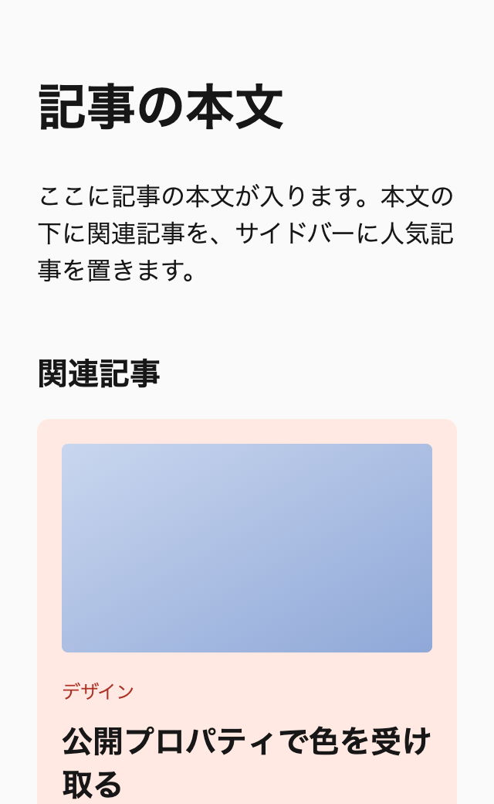
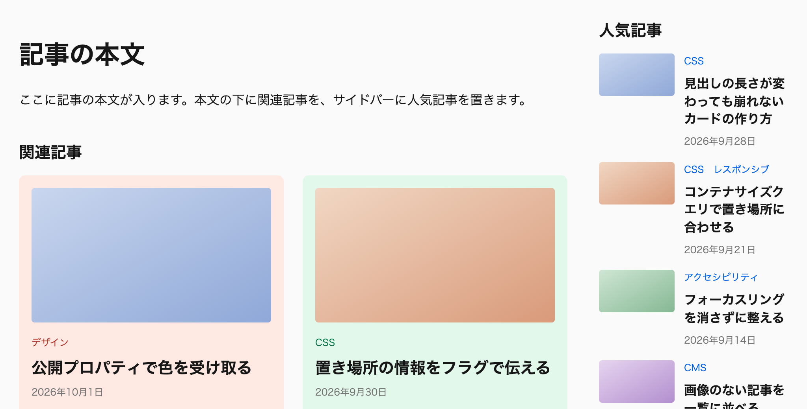
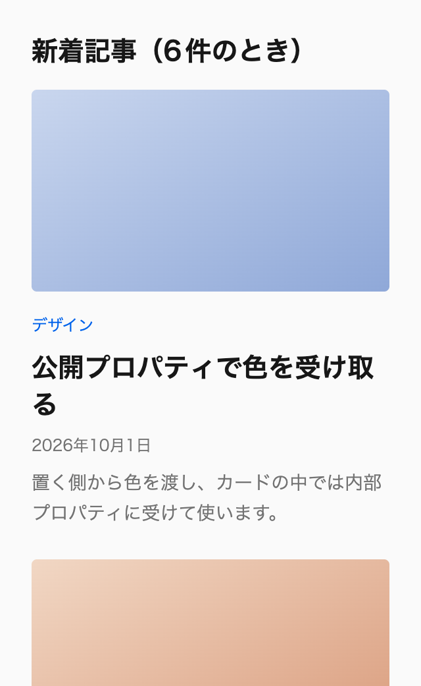
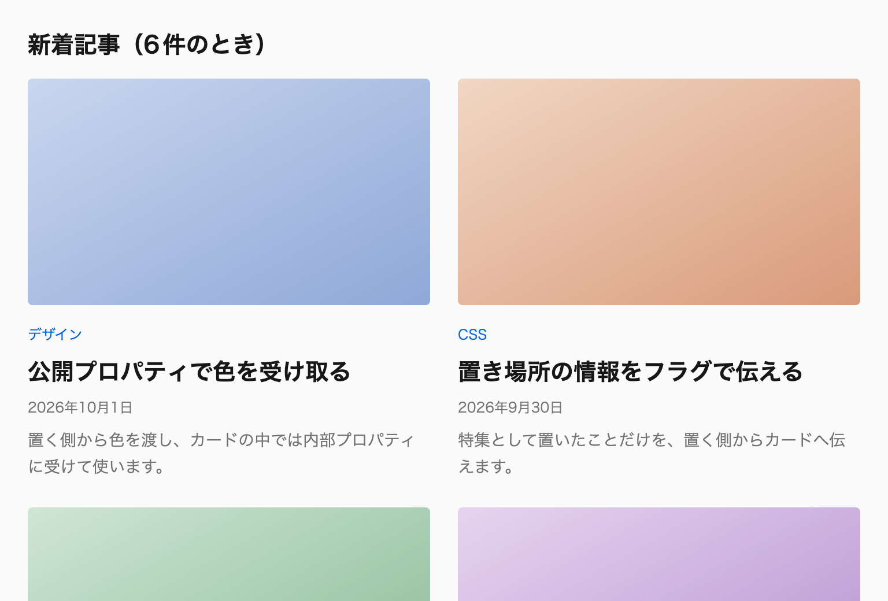
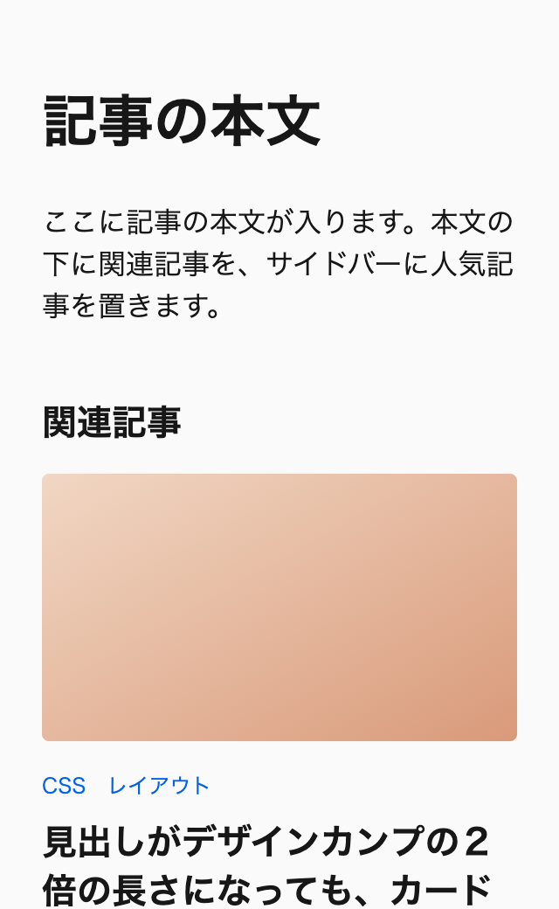
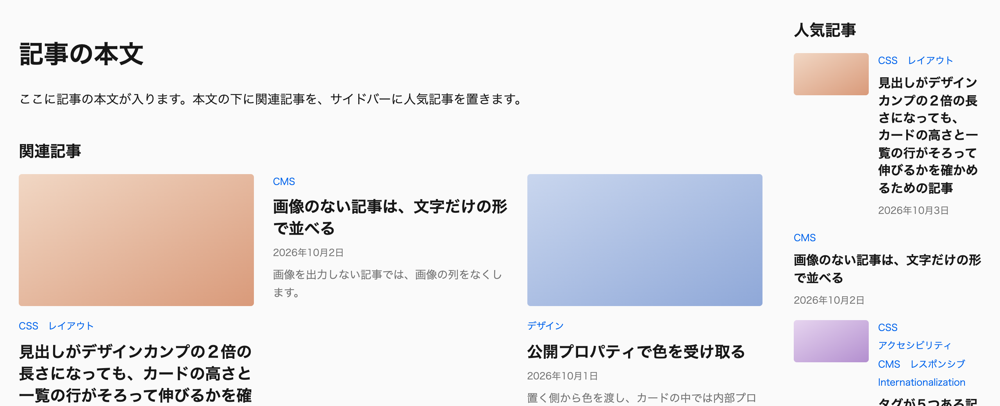
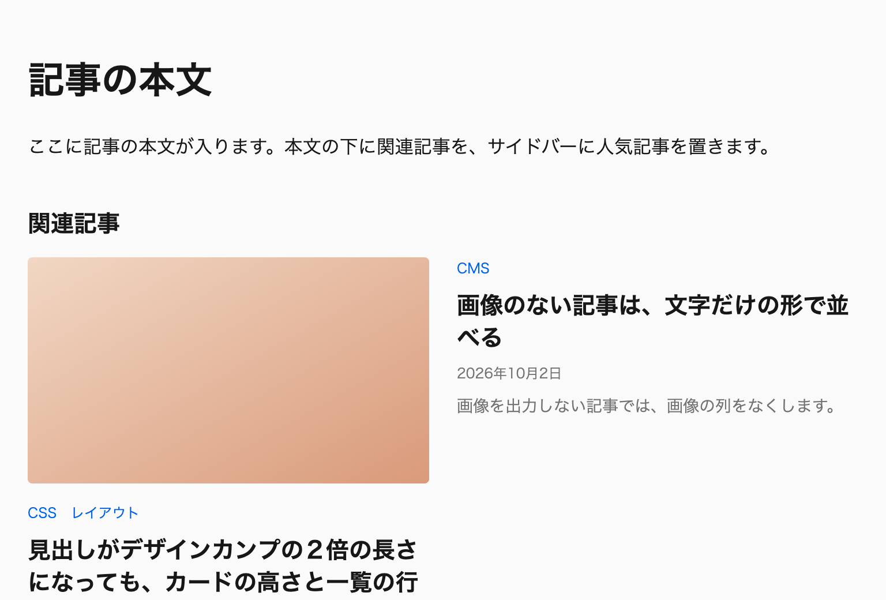
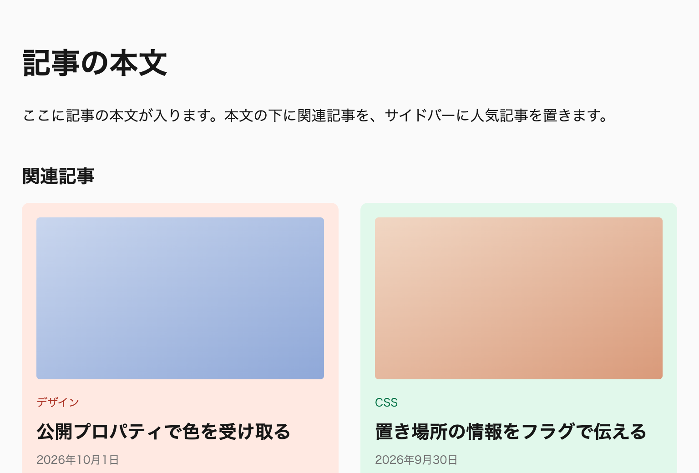
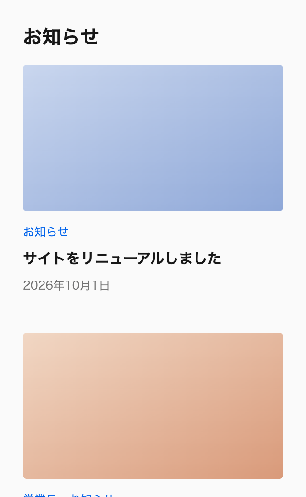
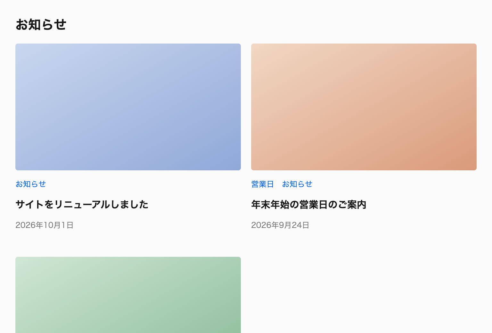

第21章 記事の一覧を作る
この章では、メディアサイトの記事のカードと、カードを並べる一覧を作ります。作るものは1つですが、節を進めるごとに要件が1つずつ変わります。カードを別の場所にも置く、見出しが長くなる、カード全体を押せるようにする、といった変更です。そのたびに、どのファイルのどこを直したか、そしてどこを直さずに済んだかを確かめます。
ここまでの章では、規約を節ごとに説明してきました。規約の良し悪しは、1つの部品に要件の変更が重なったときに分かります。この章では、直す場所の数に加えて、変更を受け持つ場所を変更の内容から予測できるか、直したときに影響が及ぶ範囲を確かめられるか、直した結果として条件分岐が複雑になっていないかの3つで確かめます。
直す場所の数だけで比べないのは、数を減らす書き方が、ほかの3つを損なうことがあるからです。たとえば、意味の違う部品を見た目が似ているからと1つに共通化すれば、直す場所は1か所に減ります。しかし、その1か所には部品ごとの事情を分ける条件分岐が重なり、1つの部品のための変更がどこまで及ぶかを読み取れなくなります（「2-3 保守しやすさを最優先にする （巻1）」、「10-1 何をコンポーネントにするか （巻2）」）。
各節は、変わった要件を示したあと、予想する、合格条件、解説、振り返りの順に進みます。解説を読む前に、自分ならどのファイルのどこを直すかを予想し、合格条件で何が満たされればよいかを確かめてください。解説の差分と見比べたあとに、振り返りで上の3つの観点から直し方を見直すと、規約が何を肩代わりしているのかが分かります。
この章で判断できるようになること
この章を終えると、要件の変更を受け取った時点で、それを受け持つのがカード、一覧、置く側のどれかを決められます。変更が幅の違いなのか、置き場所の違いなのか、状態の違いなのかを見分け、それぞれに合った仕組み（コンテナサイズクエリ、置く側のフラグ、状態のフラグ）を選べます。直す場所が多くなりそうなときや、1つのルールに条件分岐が重なりそうなときは、規約から外れた書き方がどこかに紛れていないかを疑えます。
前提とする章
この演習に、本書のすべての章を読み終えている必要はありません。21-1から21-4は、「本書の読み方 （巻1）」の「初めて読むとき」の節を読んでいれば取り組めます。各節の冒頭に、その節で使うルールを説明している節を並べているので、読んでいない節があれば、そこを読んでから取り組んでください。
とくによく使うのは、命名と @scope の書き方（第9章「記法の規約 （巻2）」）と、部品の境界と値の受け渡し（第10章「コンポーネントとカスタムプロパティ （巻2）」）です。第20章「AIにコーディングさせる 」は前提にしていません。演習は手で進めることを前提に書いているので、AIを使わない読者も、すべての節に取り組めます。
各節では、使う仕組みの説明を繰り返さず、説明している節へリンクします。仕組みに自信がないときは、リンク先を読んでから戻ってください。
節の構成
最初の節で要件と完成形を示し、次の節でカードを作ります。
21-3以降の6つの節では、冒頭で要件を1つずつ変えます。
初めて読むとき
初めて読むときは、「21-1 要件と完成形 」「21-2 カードを作る 」「21-3 一覧に並べる 」「21-4 サイドバーにも置く 」を読みます。21-5以降は、各節の冒頭に挙げた前提の節を読んでから取り組んでください。
付録へ
日々の実装とレビューでは、すべてのルールを章ごとに引ける付録A「ルール一覧 （巻3）」と、確認の項目を19-2の順番に並べた付録D「レビューのチェックリスト 」を手元に置いてください。この章の各節の末尾にある「この節で使ったルール」は、どの変更をどの規約が受け持ったかの索引にもなります。
21-1 要件と完成形
この演習では、メディアサイトの記事カードを1つ作り、トップページの新着、記事ページのサイドバーの人気記事、記事ページの本文の下の関連記事の3か所に置きます。最初の要件は、トップページの新着に6件を並べることだけです。ほかの置き場所と、内容や操作に関わる要件は、節を進めるごとに1つずつ加わります。
作り始める前に、完成形を見て、カードが自分で決めることと、置く側が決めることを分けておきます。カードが決めるのは、中の配置、文字の階層、画像の比率です。カードの幅、外側の余白、並べる列の数、特集として置くかどうかは、置く側が決めます。この線引きが、後の節で要件が変わったときに、直す場所を少なくします。
3つの置き場所
1つ目のトップページの新着は、カードを最大3列のグリッドに並べる一覧です。カードは、画像が上にあり、その下にカテゴリー、見出し、日付、抜粋が続きます。
2つ目の人気記事は、記事ページのサイドバーに置く、幅240px相当の細い一覧です。カンプでは、小さな画像が左にあり、右に見出しと日付が並び、抜粋はありません。新着と同じ記事のカードですが、置かれた場所が狭いので、形が違います。
3つ目の関連記事は、記事ページの本文の下に置く一覧です。並べ方は新着と同じで、最大3列のグリッドです。ただし、関連記事の欄のカードは特集の見た目にし、記事のカテゴリーごとに編集者が選んだ色で、背景とタグの色を変えます。
特集は、関連記事の欄に付ける装飾です。欄に並ぶ記事がほかより重要だという意味は持たせず、新着やサイドバーに同じ記事が出ても、そちらは特集の見た目にしません。また、置かれた幅が狭く、カードが小さな形（画像が左）になるときは、特集の背景を付けません。小さな形のカードは見出しの幅がもともと狭く、背景のための内側の余白を取ると、見出しの幅がさらに削られるからです。
3か所のカードは、見た目が違っても、同じ記事を表す同じ部品です。置き場所ごとにカードのCSSを書き分けると、記事に項目が1つ増えたときに、3か所を直すことになります。1つのカードを、置かれた幅と、置く側から渡される情報で切り替えるのが、この演習の方針です※1 。
最初の要件
最初に作るのは、トップページの新着だけです。記事は6件で、列の最小幅を280px相当とし、多くても3列に並べます。カードの中身は、画像、カテゴリー、見出しのリンク、日付、抜粋の5つです。
カンプにない条件は、この時点では考えません。見出しがどこまで長くなるのか、画像のない記事があるのか、カード全体を押せるようにするのかは、まだ決まっていない要件です。ただし、まだ決まっていないことと、変わらないことは違います。内容は運用が始まれば変わるという前提に立ち、カンプの内容だけで成り立つ書き方を避けておきます※2 。
完成形
次のデモは、演習の最後の節まで進めた完成形の記事ページです。メインの列に本文と関連記事を、サイドの列に人気記事を置いています。

幅 320px（上の部分）

幅 1024px（上の部分）
図21-1 完成形：同じカードが、関連記事では特集の形に、サイドバーでは小さな形になる 幅のボタンで1024pxか1280pxを選ぶと、メインとサイドの2カラムになります。関連記事の3件は、画像が上にある形で、それぞれ違う色の淡い背景とタグの色を持ちます。サイドバーの人気記事の5件は、小さな画像が左にある形で、抜粋は表示されません。
768px以下では、サイドの列がメインの下に回り、1カラムになります。このとき人気記事のカードは、置かれた幅が広くなるので、新着と同じ画像が上の形に切り替わります（カードの形は、画面の幅ではなく、カードの置かれた幅で決まります）。320pxで関連記事の欄が1列になっても、カードは画像が上の形のままなので、特集の背景は付いたままです。デモのCSSのタブでは、この完成形の全体を読めますが、各節では、その節で足した差分だけを説明します。
要件の変わり方
2つ目以降の節は、冒頭で要件を1つ変えます※3 。その後、「21-4 サイドバーにも置く 」で、サイドバーの人気記事として同じカードを置く要件が加わります。
続いて、CMSの運用が始まり、カンプの2倍の長さの見出し、画像のない記事、増えていくタグが入ってきます※4 。カードのどこを押しても記事へ移動できる要件※5 と、関連記事の欄だけを特集として見せる要件※6 も加わります。最後の「21-8 確かめて、レビューする 」では、完成したカードと一覧を第19章の手順で確かめ、同じ時期に書かれた別の一覧のコードをレビューします。
手元で進める準備
演習のファイルは、このサイトの /exercise-files/ に置いてあります。全節で共通の base.css と、版ごとのディレクトリに入ったHTMLとCSSです。base.css には、レイヤーの順序の宣言、本書のデモと同じ共通トークン、リセットCSSのkiso.css、ベーススタイルが入っていて、演習では変えません。
版のディレクトリのCSSは、本文の説明と同じく、責任ごとにファイルを分けています。コンポーネントのファイルは、記事カードの article-card.css と、一覧の article-list.css です。ほかに、コンポジションの compositions.css、トップページの page-top.css、記事ページの page-article.css、21-2でカードを置く側の demo-page.css があります。各版には、この6つのうち、その段階で要るものだけを置いています。各ファイルの中身は、本書のデモと同じ @layer（components、compositions、pages）で包んであります。レイヤーの順序は base.css の先頭で宣言しているので、ファイルを読み込む順序によってレイヤーの間の優先順位が変わることはありません。
HTMLは、<link> で ../base.css を読み込んだあと、そのページで使うCSSのファイルを読み込みます。21-2と21-3の版にあるHTMLは、トップページの index.html だけです。21-4以降の版には、トップページの index.html と記事ページの article.html があり、どちらも同じ article-card.css と article-list.css を読み込みます。カードのCSSを直したときは、2つのHTMLを開けば、もう一方の置き場所への影響も確かめられます。画像はHTMLに data: URIのSVGとして埋め込んであるので、用意する画像のファイルはありません。
手元に保存するときは、base.css を親のディレクトリに置き、その下に版のディレクトリを作って、中のファイルをすべて保存します。21-2の開始版なら、親のディレクトリに base.css を、その下の card-start のディレクトリに index.html、demo-page.css、article-card.css を置きます。ディレクトリの一覧のページはないので、HTMLの <link> に書かれたファイル名で、HTMLと同じディレクトリのURLを開いて保存します。たとえば21-2の開始版のカードのCSSは、article-card.css です。読み込むCSSのファイルが1つでも欠けると、そのファイルが受け持つ部分にスタイルが当たりません。
HTMLはブラウザで直接開けるので、開発用のサーバーは要りません。最初に開く21-2の開始版（index.html ）では、article-card.css が空の @layer components だけなので、記事カードにまだスタイルが当たっていません。画像が置く側の要素の幅いっぱいに広がり、その下にカテゴリー、見出し、日付、抜粋が並びます。置く側の要素は demo-page.css で幅を最大360px相当に絞っているので、広い画面でもカードはそれより広がりません。
各節の開始版は1つ前の節の完成版で、各節の冒頭に、その節の開始版と完成版のHTMLへのリンクを置いています。完成版は、/exercise-files/ の下の、節のURLの末尾と同じ名前のディレクトリ（card、list、sidebar、content-changes、clickable-card、featured）にあります。たとえば21-2の完成版は index.html で、同じディレクトリに demo-page.css と article-card.css があります。21-8でレビューするプルリクエストの版は、review のディレクトリにあります。そのindex.html は、お知らせのカードの notice-card.css、お知らせの一覧の notice-list.css、page-top.css、compositions.css を読み込みます。幅による切り替えは、ブラウザのウィンドウの幅を変えるか、開発者ツールのデバイスモードで幅を指定して確かめます。
演習の進め方
21-2以降の各節は、要件、予想する、合格条件、解説、振り返りの順に進みます。冒頭で要件が変わったら、解説を読み進める前に、自分ならどのファイルのどこを直すかを書き出してみてください。カードの article-card.css、一覧の article-list.css、コンポジションの compositions.css、ページのCSSとHTMLのどれを直すのか、何行くらいになりそうかを予想します。合格条件には、その節を終えた時点のデモと、何が満たされれば完成かを書いています。
解説を読んだら、振り返りで自分の予想と見比べます。見比べるのは、直す場所の数だけではありません。変更を受け持つ場所を変更の内容から予測できたか、直したときに影響が及ぶ範囲を確かめられたか、直した結果として条件分岐が複雑になっていないかも確かめます。予想とずれたところがあれば、その差がどの規約から来ているのかを、リンク先の節で確かめます。
本文のコード例は、変えた箇所だけを抜き出しています。省いた部分は /* ... */ と書き、どのルールの中を変えたのかが分かるようにしています。各節のデモは、その節を終えた時点の全体なので、差分の前後をつなげて読みたいときは、デモのCSSのタブを開いてください。デモのCSSは、配布版で分けたファイルの中身を1つにまとめたもので、@layer と @scope も省略せずに書いています。
判断の問い
完成形のデモと3つの置き場所の説明を見て、次の項目を、カードが自分で決めることと、置く側が決めることに分けてください。画像の縦横比、カードの幅、カードとカードの間隔、見出しの文字の大きさ、並べる列の数、特集として見せるかどうか、特集の背景の色です。
答えと解説 カードが自分で決めるのは、画像の縦横比と、見出しの文字の大きさです。どちらもカードの中の配置と文字の階層に関わり、どこに置かれても同じ考え方で決まります。置かれた幅によって見出しを大きくするときも、その切り替えはカードが自分の幅を見て行います。
置く側が決めるのは、カードの幅、カードとカードの間隔、並べる列の数、特集として見せるかどうかです。幅と間隔と列数は一覧の配置の問題で、カードは自分が何列目に置かれ、隣に何があるかを知りません※7 。特集かどうかは、関連記事の欄に置かれたという置き場所の情報なので、置く側からカードへ伝えます。
特集の背景の色は、2つに分けて考えます。どの色にするかは編集者が記事ごとに選ぶ値なので、置く側から渡します。渡された色を背景にどう使うか（どれだけ淡くするか）は、カードが決めます。
この節で使ったルール
21-2 カードを作る
トップページの新着に置く記事カードを作ります。カードは、記事の画像、カテゴリー、見出し、日付、抜粋を、この順で上から並べて表示します。画像は16:9の比率で表示し、見出しは記事のページへのリンクにします。
手元で進めるときは、開始版（index.html ）から始め、完成版（index.html ）と見比べます。CSSのファイルは、それぞれのHTMLと同じディレクトリにあります※1 。
この節で使うルールは、次の節で説明しています。読んでいない節があれば、先に読んでから取り組んでください。
予想する
本文を読む前に、カードのCSS（article-card.css）に何を書くかを考えてみてください。カンプにある360px相当の幅と、カードの下の24pxの間隔は、article-card.css に書くでしょうか。それとも、カードを置く側のCSS（この節では demo-page.css）に書くでしょうか。
カードの中の並べ方、画像の比率、文字の階層を、それぞれどのプロパティで決めるかも予想します。見出しの大きさや色を将来変えたくなったときに備えて、外から値を受け取る仕組みを今用意するかどうかも決めておきます。書くCSSが何ルールくらいになるか、どの規約が関わりそうかを見積もってから読み進めると、あとで見比べられます。
合格条件
次のデモが、この節を終えた時点のカードです。デモでは、カードを置く側の要素を最大幅360px相当にして、新着の一覧の1列分に近い幅でカードを表示しています。
図21-2 21-2を終えた時点の記事カード：幅は置く側の要素で決まる 幅のボタンで320pxを選ぶと、カードは置かれた要素の幅いっぱいの288pxになり、480px以上では、置く側の上限の360pxで止まります。どの幅でも、画像は16:9の比率を保ち、画像の下にカテゴリー、見出し、日付、抜粋が同じ間隔で並べば完成です。開発者ツールでカードのルートを選んだとき、margin がすべて0で、幅が親の要素から決まっていることも条件です。
カードの範囲を決める
カードのCSSは article-card.css の1つのファイルに書き、@scope (.scoped.article-card) to (.scoped) の中に閉じ込めます。カードが決めるのは、中の配置、画像の比率、文字の階層だけです。
カードのHTMLは、ルートの article に scoped article-card を付け、画像と、文字をまとめる div を並べます。見出しのリンクは記事のページへ移動するためのもので、見出しの h3 の中に置きます。
🙆♂ Recommended: ルートに scoped を付け、クラスは役割を区別する要素にだけ付ける < article class = " scoped article-card " >
< img src = " … " alt = "" width = " 640 " height = " 360 " >
< div class = " _body " >
< p class = " _category " > デザイン </ p > < h3 >< a href = " #article-accent-property " > 公開プロパティで色を受け取る </ a ></ h3 > < time datetime = " 2026-10-01 " > 2026年10月1日 </ time > < p class = " _excerpt " > 置く側から色を渡し、カードの中では内部プロパティに受けて使います。 </ p > </ div > </ article > 子要素は、@scope の中のp の役割を区別する _category と _excerpt、そして役割を示す必要のある div の _body だけです（「10-2 コンポーネントの境界を守る （巻2）」、「9-1 命名規則 （巻2）」）。img、h3、time は、カードの中に1つずつしかないので、クラスがなくても選べます。
画像の alt は空にしています。カードの画像は記事の内容を表す写真ですが、すぐ隣の見出しが同じ内容を伝えているので、画像の説明を読み上げても情報は増えません。width と height の属性は、画像を読み込む前に縦横比の場所を確保するために書きます※2 。
CSSは、カードのファイルの1つの @scope に書きます。.scoped にしているので、将来カードの中に別のコンポーネントを入れても、カードのタイプセレクタはその中に届きません※3 。
外側の余白と幅を持たせない
カードを作るときにやりがちなのは、カンプで見た幅と、カードの下の余白を、カード自身に書いてしまうことです。
🙅♂ Not Recommended: カンプで見た幅と下の余白を、カードのルートに書く /* 🙅♂ Not Recommended */
@scope (.scoped.article-card) to (.scoped) {
:scope {
inline-size : calc ( 360 / 16 * 1 rem );
margin-block-end : 24 px ;
}
} この書き方では、カードがトップページの新着に置かれることを前提にしています。サイドバーに置けば360px相当では入りきらず、関連記事の一覧に置けば、最後のカードの下にも24pxの余白が残ります。置き場所が増えるたびに、置く側がこの値を打ち消すことになります。
カードのルートには、幅も外側の余白も書きません（no-external-layout-on-root）。カードはブロックレベルの要素なので、幅を書かなければ置かれた場所の幅いっぱいに広がります。カードとカードの間隔は、次の節で、並べる側の gap で作ります※4 。
中の配置を決める
カードの中は、画像と文字のまとまりを縦に並べ、文字のまとまりの中では、カテゴリー、見出し、日付、抜粋を縦に並べます。どちらも、間隔は一律です。
🙆♂ Recommended: 中の配置は、ルートと文字のまとまりの grid と gap で決める @scope (.scoped.article-card) to (.scoped) {
:scope {
display : block grid ;
gap : 16 px ;
}
._body {
display : block grid ;
gap : 8 px ;
}
} ルートの gap は、カードの外ではなく、カードの中の画像と文字の間の余白です。そのため、ルートに書いても、置き場所に依存しません。文字のまとまりの中の間隔も gap で作り、子要素の margin には頼りません※5 。
._body の間隔を、& > * + * で後ろの要素の margin-block-start に付ける書き方もあります。種類の違う要素が続き、要素ごとに間隔を変えたい本文の流れなら、そちらが向いています。カードの文字のまとまりは、構成が決まっていて間隔も一律なので、gap のほうが短く書けます。
画像の比率と文字の階層
画像は、置かれた幅いっぱいに広げ、高さは縦横比から決めます。高さを block-size で固定しないので、カードの幅が変わっても比率は保たれます※6 。
🙆♂ Recommended: 画像は幅いっぱいに広げ、高さを縦横比で決める @scope (.scoped.article-card) to (.scoped) {
img {
inline-size : -webkit-fill-available ;
inline-size : stretch ;
aspect-ratio : 16 / 9 ;
border-radius : var ( --rounded--sm );
object-fit : cover ;
}
} img は、グリッドのアイテムでも自然には幅いっぱいに広がらない置換要素なので、stretch で広げます※7 。比率の違う写真が入っても引き伸ばさないように、object-fit: cover で枠を埋めます。
文字は、見出しを大きく、カテゴリー、日付、抜粋を小さく、日付と抜粋は控えめな色にします。大きさと行の高さは、文字の役割のトークンを組で参照します。役割は、用途ごとの文字サイズと行の高さを組にしたトークンです※8 。見出しはtitle、カテゴリーと日付はcaption、抜粋はbody-compactにします。色と角丸もトークンを参照し、数値や色を直接書きません※9 。
🙆♂ Recommended: 文字の階層は、文字の役割と色のトークンで付ける @scope (.scoped.article-card) to (.scoped) {
._category {
color : var ( --foreground--accent );
font-size : calc ( var ( --text--caption--font-size ) / 16 * 1 rem );
line-height : var ( --text--caption--leading );
}
h3 {
font-size : calc ( var ( --text--title--font-size ) / 16 * 1 rem );
line-height : var ( --text--title--leading );
}
h3 a {
color : inherit ;
}
time {
color : var ( --foreground--muted );
font-size : calc ( var ( --text--caption--font-size ) / 16 * 1 rem );
line-height : var ( --text--caption--leading );
}
._excerpt {
color : var ( --foreground--muted );
font-size : calc ( var ( --text--body-compact--font-size ) / 16 * 1 rem );
line-height : var ( --text--body-compact--leading );
}
} 見出しのリンクは、文字の色を見出しから継承させます。リンクの下線は、kiso.cssが消しているので付きません。押せることを示す手がかりは、カード全体を押せるようにする要件が加わる節で、ホバーとフォーカスのときの見た目として足します※10 。
カードを作る段階で、見出しの大きさや背景の色を、外から変えられるように公開プロパティにしておきたくなるかもしれません。しかし、この時点の要件には、外から変えたい値がありません。
公開プロパティは、作った時点で、カードの外との約束になります。使う側がいつ値を渡しているか分からないので、名前やデフォルト値を後から変えにくくなります※11 。そのため、外から変える要件が実際に来てから足します。この演習でも、関連記事の欄だけ特集として見せる要件が来たときに、初めて足します（特集かどうかを伝えるフラグと、色の値の2つ）。
確かめる
ここまでのCSSで、カードは置かれた幅に合わせて広がり、外側に余白を持たない部品になりました。デモの幅のボタンで、カードの幅が置く側の要素で決まっていることを確かめます。開発者ツールでカードのルートを選ぶと、margin がすべて0で、幅がカード自身のCSSではなく親から決まっていることも確かめられます※12 。
この時点では、長い見出しや画像のない記事は確かめていません。高さを固定していないので、見出しが長くなってもカードは伸びるはずですが、その確認は、内容の変化を要件として扱う節でまとめて行います※13 。
振り返り
この節で書いたのは、index.html のカードのHTMLと、1つの @scope に収めた article-card.css です。CSSが決めているのは、ルートと ._body の grid と gap、画像の幅と縦横比、文字の役割と色だけです。
書かなかったのは、カードの幅、カードの下の余白、公開プロパティの3つです。カンプの360px相当は置く側の要素の最大幅として demo-page.css に、24pxの間隔は次の節で一覧の gap として書きます。カードのCSSには、置き場所を前提にした値が1つも入っていません。次の節以降で置き場所や要件が変わっても、カードを直す量が少なくて済むのは、この3つを持たせなかったからです。
予想と見比べたら、自分の書いたCSSを次の3つの点で見直します。
カンプの幅と下の間隔を、カードと置く側のどちらが受け持つと予想したか。カードに書いていたなら、置く側に移せるか。
カードを別の場所に置いたとき、カードのCSSのどの宣言が置き場所によって合わなくなるかを、宣言を読んで挙げられるか。
まだ要件にない値のために、公開プロパティやクエリを足していないか。足しているなら、使わない分岐を後から外せるか。
判断の問い
問い1
デザイナーから、新着の一覧でカードとカードの間を縦に24px空けてほしいと言われました。カードの margin-block-end に24pxを書きますか。
答えと解説 書きません。カードとカードの間隔は、カードを並べる一覧が決めることです。カードに書くと、最後のカードの下にも余白が残り、サイドバーのように間隔の違う場所に置いたときには、置く側で打ち消すことになります。間隔は、並べる側の gap で作ります（no-external-layout-on-root、parent-owns-child-placement）。
問い2
見出しの文字の大きさを、将来の変更に備えて、公開プロパティ --article-card--heading-size で受け取れるようにしておきますか。
答えと解説 まだ作りません。外から見出しの大きさを変える要件がないからです。公開プロパティは使う側との約束になるので、作ったあとは名前とデフォルト値を変えにくくなります。後の節で見出しの大きさを置き場所によって変える要件が来ますが、そのときは、外から値を渡すのではなく、カードが置かれた幅を見て自分で切り替えます※14 。
この節で使ったルール
21-3 一覧に並べる
前の節で作った記事カードを、トップページの新着として6件並べます。一覧には「新着記事」の見出しを付け、その下にカードを並べます。列の最小幅は280px相当で、多くても3列にし、カードとカードの間は24px空けます。節の後半で要件が1つ変わり、新着が7件に増えます。
手元で進めるときは、開始版（index.html ）から始め、完成版（index.html ）と見比べます。CSSのファイルは、それぞれのHTMLと同じディレクトリにあります※1 。
この節で使うルールは、次の節で説明しています。読んでいない節があれば、先に読んでから取り組んでください。
予想する
本文を読む前に、どのファイルに何を書くかを考えてみてください。候補は、前の節で作ったカードの article-card.css、見出しとカードの並びをまとめる側の新しいCSSのファイル、コンポジションの compositions.css、トップページの index.html です。列の数を1列、2列、3列と変える条件には、何の幅を使うでしょうか。カードとカードの間の24pxを、どこに書くかも決めておきます。
7件に増えたときのことも予想します。3列で並べると最終行に1件だけが残ります。その1件の幅と位置がどうなるか、そのためにどのファイルを何行直すかを見積もってから読み進めます。
合格条件
次のデモが、この節を終えた時点のトップページです。新着の一覧を縦に2つ並べ、1つ目に6件、2つ目に7件を入れています。

幅 320px（上の部分）

幅 768px（上の部分）
図21-3 21-3を終えた時点の新着：6件と7件を同じCSSで並べる 幅のボタンで1280pxを選ぶと、どちらの一覧も3列になり、カードの幅は400pxです。7件の一覧では、3行目の左端に7件目が1件だけ置かれ、その幅もほかのカードと同じ400pxです。768pxでは2列（カードの幅356px）、320pxでは1列（288px）になります。どの幅でも横スクロールが起きず、2つの一覧がHTMLの記事の数だけを変えた同じCSSで表示されれば完成です。
一覧の
新着の一覧は、見出しの h2 と、カードを並べる ul をまとめたコンポーネント article-list にします。カードは、ul の中に1件ずつ li で入れます。列の数は、ul の grid コンポジションへ style 属性で値を渡して決め、カードのCSSは1行も変えません。
🙆♂ Recommended: 見出しと並びを article-list にまとめ、列は grid に任せる < section class = " scoped article-list " >
< h2 > 新着記事 </ h2 > < ul class = " grid " style = " --grid--column-min-width: calc(280 / 16 * 1rem); --grid--column-max-count: 3; --grid--gap: 24px " >
< li > < article class = " scoped article-card " > … </ article > </ li > <!-- ... -->
</ ul > </ section > カードとは別に一覧のコンポーネントを作るのは、並べる責任を持つ要素が要るからです。カードは、自分が何件目で、何列目に置かれ、隣に何があるかを知りません。カードとカードの間隔や列の数は、カードを子に持つ一覧が決めます※2 。
article-list のCSSが受け持つのは、見出しと並びの間隔と、見出しの文字の役割だけです。列の数、列の幅、カードとカードの間隔は、ここには書きません。
🙆♂ Recommended: 一覧のCSSには、見出しと並びの関係だけを書く @scope (.scoped.article-list) to (.scoped) {
:scope {
display : block grid ;
gap : 16 px ;
}
h2 {
font-size : calc ( var ( --text--title--font-size ) / 16 * 1 rem );
line-height : var ( --text--title--leading );
}
} スコープの下限を .scoped にしているので、一覧のタイプセレクタはカードの中に届きません。一覧のCSSに p や time を選ぶ指定を足しても、カードの中の p や time には当たりません。
列の数を grid
カードの列数を、画面の幅ごとにメディアクエリで切り替えたくなるかもしれません。
🙅♂ Not Recommended: 画面の幅ごとに、一覧の列数を切り替える /* 🙅♂ Not Recommended */
@scope (.scoped.article-list) to (.scoped) {
ul {
display : block grid ;
grid-template-columns : 1 fr ;
gap : 24 px ;
@ media ( width >= calc (640 / 16 * 1 rem )) {
grid-template-columns : repeat ( 2 , 1 fr );
}
@media ( width >= calc( 1024 / 16 * 1 rem ) ) {
grid-template-columns : repeat(3, 1fr );
}
}
} この書き方は、一覧が画面の幅いっぱいに置かれることを前提にしています。この演習では、同じ一覧を記事ページの本文の下にも置き、そこではサイドバーの分だけ一覧が狭くなります。画面の幅が1024pxあっても、一覧の幅は3列のカードを並べるのに足りるとは限りません。1fr の列には下限もないので、カードがどこまで狭くなるかを一覧の側で決められません。
一覧の ul には grid を付け、列の最小幅、列の最大数、間隔を style 属性で渡します※3 。列の数は画面ではなく一覧自身の幅から決まり、280px相当を下回らない範囲で、3列まで1列ずつ増えます。grid のコードは12-6のものをそのまま使い、この一覧のために変えません。
値を style 属性で渡すのは、列の最小幅、最大数、間隔が、この一覧に固有の設定だからです。修飾のクラス（.grid.-three-columns など）を増やさずに、一覧ごとに違う値を同じ grid に渡せます※4 。カードとカードの間隔24pxも、ここで --grid--gap として渡します。前の節でカードに margin を持たせなかったので、この間隔を一覧の側だけで決められます。
狭い幅で列がはみ出さないか
320pxの表示では、デモの枠の左右の余白を除いた一覧の幅が288pxです。列の最小幅の280px相当を上回るので、カードは1列に並び、幅は288pxになります。
一覧がこれより狭い場所に置かれても、列ははみ出しません。grid は、列の幅を min(100%, …) で一覧の幅に抑えているからです※5 。この指定はコンポジションの中で済んでいるので、一覧の側で書き足すものはありません。一覧の幅が列の最小幅を下回る場面は、サイドバーに置く節で実際に出てきます※6 。
記事が7件になったとき
ここで要件が変わります。新着の件数が7件に増えました。3列で並べると、1行目と2行目は3件ずつで、3行目には1件だけが残ります。
直す箇所はありません。デモの2つ目の一覧のとおり、7件目は3行目の左端に置かれ、幅はほかのカードと同じです。グリッドの列は、すべての行で共通の幅を持つからです。7件目は1列目のセルに入るので、1行目と2行目の1列目と同じ幅になります。Flexboxの折り返しで並べ、子に flex-grow を付けていたら、余った幅は行ごとに分けられるので、最後の1件が行いっぱいに広がっていたはずです。
--grid--mode は渡さず、デフォルトの auto-fill のままにしています。auto-fill と auto-fit の違いが出るのは、件数が1行に入る列の数より少ないときです。新着が2件しかない日に auto-fit を渡していると、2件のカードが行の半分ずつまで広がり、6件の日とカードの幅が変わります。新着のように件数が変わる一覧では、auto-fill のままにしておきます※7 。
最終行の1件を中央に寄せるなら
最終行の1件は、左に寄ったままでもカードの幅がそろっているので、一覧として崩れてはいません。ただし、カンプが6件のような割り切れる件数で描かれているなら、端数の行の見た目はカンプから読み取れません。左に寄せたままでよいかは、デザイナーに確かめます。
中央に寄せてほしいと言われたら、指定は article-list に書きます。最終行に何件残るかは、件数と列の数で決まる並べ方の問題で、カードは自分が何件目かを知らないからです。grid コンポジションにも書きません。grid はほかの一覧でも使う部品なので、新着の一覧だけの要件を入れると、左に寄せたい一覧まで中央に寄ります。
書き方は、「11-5 件数で配置を組み替える （巻2）」のものを使います。1件のカードに2列分を使わせ、最終行に残ったカードの開始位置を、空いた列の半分だけ後ろにずらす方法です。一覧の幅から列の数を判定するために、一覧はコンテナになり、列の数をフラグに立て、件数を数えるセレクタを持つことになります。一覧のCSSはその分だけ増えるので、中央に寄せる要件が実際に来てから書きます。
振り返り
6件を並べる要件で足したのは、一覧のコンポーネント article-list（article-list.css）と、12-6の grid コンポジション（compositions.css）、index.html の新着のHTMLです。デモのように2つの一覧を縦に並べる間隔は、トップページの page-top.css に書き、21-2で置く側を受け持っていた demo-page.css はなくなりました。article-list のCSSは、見出しの大きさと、見出しと並びの間隔だけの短いものです。
7件に増える変更では、CSSもHTMLの構造も直していません。変わったのは、記事のデータが1件増えたことだけです。
カードの article-card.css とHTMLは、この節を通して1行も直していません。前の節でカードのルートに幅と外側の余白を書かなかったので、列の幅がそのままカードの幅になり、カードとカードの間隔は一覧の gap で決まります。デモのCSSのタブを開くと、article-card のスコープの中身が前の節と同じだと確かめられます。
予想と見比べたら、自分の変更を次の3つの点で見直します。
列の数とカードの間隔を受け持つ場所を、カードではなく並べる側だと予想できたか。カードのCSSを直していたなら、その変更は一覧に移せるか。
一覧を記事ページのような狭い場所に置いたとき、列の数がどう変わるかを、一覧のCSSと style 属性の値から言えるか。画面の幅を条件にしていたら、その条件が成り立たない置き場所を挙げられるか。
7件目のために、件数や列の数で分かれる指定を足していないか。足したなら、それが要件として求められたものかを確かめたか。
判断の問い
問い1
デザイナーから、7件目を3行目の中央に寄せてほしいと言われました。中央に寄せる指定は、article-card、grid コンポジション、article-list のどれに書きますか。
答えと解説 article-list に書きます。最終行に何件残るかは、件数と列の数で決まる並べ方の問題で、それを知っているのはカードを並べる一覧です（parent-owns-child-placement）。
カードに書くと、カードのルートに grid-column-start のような配置の指定を持たせることになります。カードは自分が何件目かを知らないうえに、サイドバーのような別の置き場所でも同じ指定が当たります（no-external-layout-on-root）。grid コンポジションに書くと、grid を使うほかの一覧まで中央に寄ります。コンポジションは特定の一覧の要件を持たない部品として、12-6のまま使います※8 。
問い2
7件目だけが左に残るのを避けるために、一覧の style 属性に --grid--mode: auto-fit を足すことにしました。これで、7件目は3行目いっぱいに広がりますか。
答えと解説 広がりません。auto-fit が幅0に畳むのは、どの行にもアイテムが置かれていない列だけです。7件を3列に並べると、2列目と3列目にも1行目と2行目のカードが入っているので、列は畳まれず、7件目は1列目の幅のままです。（2026年10月、Chromeで確認）
auto-fit で見た目が変わるのは、件数が1行の列の数より少ないときです。そのときはカードが行いっぱいに広がり、件数によってカードの幅が変わります。新着のように件数が変わる一覧には、auto-fill のままが合っています（grid-mode-auto-fill-default）。最終行の端数の見せ方を変えたいなら、問い1のとおり、一覧の側で書き足します。
この節で使ったルール
21-5 内容の変化に耐える
手元で進めるときは、開始版（index.html 、article.html ）から始め、完成版（index.html 、article.html ）と見比べます。CSSのファイルは、それぞれのHTMLと同じディレクトリにあります※1 。
この節で使うルールは、次の節で説明しています。読んでいない節があれば、先に読んでから取り組んでください。
予想する
本文を読む前に、4つの内容（長い見出し、画像のない記事、5つのタグ、長い英単語のタグ）のそれぞれで、カードがどう崩れるかを考えてみてください。前の節でカードは、広い形（画像が上）と狭い形（画像が左）の2つを持つようになりました。どの内容が、どちらの形で崩れそうでしょうか。
そのうえで、直すファイルと箇所を見積もります。何も直さずに収まる内容はどれか、カードの article-card.css を直すならどのルールに何行足すか、index.html と article.html のカードのHTMLを変える必要があるかを予想します。見出しが長くなってカードの高さがそろわなくなることを、直すべき崩れと見るかどうかも決めておきます。
合格条件
次のデモが、この節を終えた時点の記事ページです。関連記事とサイドバーの人気記事の両方に、長い見出し、画像のない記事、5つのタグ、長い英単語のタグを入れています。

幅 320px（上の部分）

幅 1280px（上の部分）
図21-5 21-5を終えた時点：長い見出し、画像のない記事、5つのタグを入れた記事ページ 幅のボタンで1280pxを選ぶと、画像のない記事は、関連記事とサイドバーのどちらでも画像の列がなくなり、文字だけの1列になります。サイドバーの5つのタグを持つカードでは、タグが複数行に折り返し、どのカードの中身もカードからはみ出しません。長い見出しは切り詰められずに全文が表示され、そのカードはほかのカードより高くなります。320pxを選んでも横スクロールが出なければ、記事ページは完成です。
この節でもカードのCSSを変えるので、トップページも確かめます。この節の完成版のindex.html （トップページ）を開き、カテゴリーの表示がタグ1つのリストに変わった新着が、前の節のindex.html と同じ見た目であることも条件です。
最悪の内容を入れて確かめる
直す場所を探す前に、何も変えないまま、崩れやすい内容をカードに入れて確かめます。カンプのダミーテキストは崩れる条件をほとんど含まないので、どこが崩れるかは、実際に近い内容を入れないと分かりません※2 。
入れる内容は、要件に挙がった4つです。カンプの2倍の長さの見出し、画像のない記事、5つのタグ、長い英単語のタグを、関連記事とサイドバーの人気記事の両方に入れます。両方に入れるのは、同じカードが置かれた幅によって --compact と --spacious の2つの形に切り替わるからです※3 。片方の形でしか崩れない内容があるので、2つの形をどちらも確かめます。
直さずに済んだ見出しと長い英単語
カンプの2倍の長さの見出しは、どちらの形でも複数行に折り返し、カードはその分だけ高くなります。カードのどこにも高さを書いていないからです。「21-2 カードを作る 」で画像の高さを aspect-ratio で決め、カードと文字のまとまりの高さは中身に任せたので、見出しが何行になっても、中身はカードの外へあふれません※4 。
🙅♂ Not Recommended: カンプの3枚の高さをそろえるために、カードの高さを固定する /* 🙅♂ Not Recommended */
@scope (.scoped.article-card) to (.scoped) {
:scope {
block-size : calc ( 360 / 16 * 1 rem );
}
} カンプの3枚の高さをそろえようとして、このように高さを固定していたら、2倍の見出しはカードの下へあふれ、次の行のカードに重なっていたはずです。高さを書かなかったので、関連記事のグリッドでは、行の高さがその行でいちばん高いカードに合わせて決まり、次の行はその下から始まります。サイドバーの人気記事も、カードが高くなった分だけ一覧が縦に伸びます。一覧とページの値は、カードの高さに合わせて変える必要がありません。
長い英単語のタグも直しません。:root に指定している overflow-wrap: anywhere によって、列に入りきらない単語は途中で折り返します。anywhere は要素の最小幅の計算にも反映されるので、長い単語がグリッドの列やフレックスアイテムを押し広げることもありません※5 。カードのCSSに、長い単語のための指定を足す必要はありません。
画像のない記事の列をなくす
画像のない記事は、関連記事では文字だけのカードとして収まりますが、サイドバーでは崩れます。--compact の形の ._layout は、画像の列（96px相当）と文字の列を並べる2列のグリッドだからです。画像がないと ._body が唯一の子になり、グリッドの自動配置によって1列目の96px相当の列に入ります。文字は細い列に押し込まれ、2列目は空いたままになります。（2026年10月、Chromeで確認）
🙆♂ Recommended: 画像を持たない ._layout は、1列にする @scope (.scoped.article-card) to (.scoped) {
._layout {
/* ... */
&:not(:has(> img)) {
grid-template-columns : 1 fr ;
}
}
} 「画像を持たない」は、:not(:has(> img)) と書きます。入れ子の順序を逆にした :has(> :not(img)) は「画像でない子を持つ」という意味になり、._body を持つすべてのカードに当てはまります※6 。引数を > で直下の子に絞っているので、将来 ._body の中に画像が入っても、この条件は変わりません。
このルールは、21-4のコンテナサイズクエリと同じ ._layout のルールに書きますが、クエリの中には入れません。画像があるかどうかは置かれた幅と関係なく決まる、--_density のフラグとは別の条件だからです。画像のないカードもサイドバーでは --compact のままで、見出しは小さく、抜粋は表示されません。画像の有無で変わるのは、列の数だけです。
CMSのテンプレートは、画像のない記事では img 要素そのものを出力しないようにします。src の空の img や、代わりの画像を出力すると、:has(> img) が当てはまり、2列のままになります。
🙆♂ Recommended: 画像のない記事では、img 要素を出力しない < article class = " scoped article-card " >
< div class = " _layout " >
< div class = " _body " >
<!-- タグ、見出し、日付、抜粋 -->
</ div > </ div > </ article > カテゴリーをタグのリストにする
1つのカテゴリーを表示していた p は、タグの数だけリンクを並べるリストに変えます。HTMLを変えるのは、内容が、1つの文字からリンクの並びに変わったからです。21-4で ._layout を足したのはコンテナの仕組みのためでしたが、ここで変えるのはCSSの都合ではありません※7 。
🙆♂ Recommended: タグは、リンクのリストにして cluster で並べる < ul class = " _tags | cluster " >
< li >< a class = " _tag-link " href = " #tag-css " > CSS </ a ></ li > < li >< a class = " _tag-link " href = " #tag-layout " > レイアウト </ a ></ li > </ ul > 同じ種類の項目が並ぶので、div ではなく ul にします。スクリーンリーダーはリストの項目の数を伝えるので、タグがいくつあるかが分かります。リストのマーカーと左の余白は、kiso.cssが ul に指定している list-style-type: "" と padding-inline-start: unset で消えます。カードのCSSに書き足す指定はありません※8 。
タグを横に並べるとき、カードの中で display: block flex を書きたくなるかもしれません。
🙅♂ Not Recommended: タグの横並びをカードの中で組み、折り返しを指定しない /* 🙅♂ Not Recommended */
@scope (.scoped.article-card) to (.scoped) {
._tags {
display : block flex ;
gap : 4 px 12 px ;
}
} この書き方は、カンプのようにタグが1つか2つのうちは問題なく見えます。しかし、flex-wrap を指定していないので、タグは次の行へ移れません。サイドバーの細い列に5つのタグが入ると、各タグが1行の中で縮み、単語の途中で改行されます。（2026年10月、Chromeで確認）
🙆♂ Recommended: 並びは cluster に任せ、カードは間隔と文字だけを決める @scope (.scoped.article-card) to (.scoped) {
._tags {
--cluster--row-gap : 4 px ;
--cluster--column-gap : 12 px ;
font-size : calc ( var ( --text--caption--font-size ) / 16 * 1 rem );
line-height : var ( --text--caption--leading );
}
._tag-link {
color : var ( --foreground--accent );
}
} 並び方は、コンポジションの cluster に任せます。cluster は flex-wrap: wrap を含むので、タグが増えて入りきらなければ次の行へ折り返します。使う場所ごとに折り返しを指定しなくて済み、HTMLのクラス名から「並べて折り返す」という意図が読めます※9 。この節で、compositions.css（デモのCSSでは compositions のレイヤー）に cluster を足しています。
間隔の値は、style 属性ではなく、article-card.css の ._tags のルールで cluster の公開プロパティに渡しています。タグのリストはカードのテンプレートの一部で、どの記事でも同じ値を渡すからです。._category に書いていた文字の役割とアクセント色は、._tags と、リンクの ._tag-link へ移しました。リンクの色は、._tags のルールの中へネストせず、リンク自身のクラスで指定します。._tags の下の a を選ぶと、カードの中の見出しのリンクと見分ける手がかりが、HTMLの入れ子だけになるからです（「10-2 コンポーネントの境界を守る （10-2、巻2）」）。
見出しと日付を切り詰めない
サイドバーの人気記事では、長い見出しのカードだけが高くなり、カードの高さがそろわなくなります。見出しを2行で打ち切れば、長い見出しのカードだけが高くなることは避けられますが、この演習では切り詰めません。
🙅♂ Not Recommended: 高さをそろえるために、見出しを2行で打ち切る /* 🙅♂ Not Recommended */
@scope (.scoped.article-card) to (.scoped) {
h3 {
display : -webkit-box ;
overflow-block : clip ;
-webkit-box-orient : block-axis ;
-webkit-line-clamp : 2 ;
}
} 見出しは、記事を開くかどうかを決めるための情報で、カードのリンクのテキストでもあります。切り詰めた部分は画面の上では読めなくなるので、切り詰めるなら、全文を読める手段が要ります※10 。カードの見出しなら、リンク先の記事に全文があります。それでも、開く前に読めない部分は、開くかどうかの判断に使えません。カードが伸びても一覧が伸びるだけで、崩れるものはないので、高さをそろえるために見出しを削る理由がありません。
日付も切り詰めません。日付や金額のような数値は、一部だけが見えても値として読めず、読み違えるおそれがあります※11 。1行で収めようとして white-space: nowrap を付けることもしません。文字を200%まで拡大したときのように、列の幅が文字より狭くなると、折り返せない日付は列からはみ出すからです。
振り返り
直したのは、カードの2か所とタグのHTMLです。article-card.css では、画像を持たない ._layout を1列にするルールを足し、カテゴリーの ._category を、cluster に間隔を渡す ._tags のルールに置き換えました。index.html と article.html のカードのHTMLでは、カテゴリーの p をタグのリンクのリストに変え、画像のない記事では img を出力しないようにしています。
直さずに済んだのは、長い見出しと長い英単語です。カードに高さを書いていないので、長い見出しはカードを伸ばし、長い英単語はkiso.cssの overflow-wrap: anywhere で折り返します。article-list.css、compositions.css の grid と sidebar、21-4で決めたフラグと閾値も、どれも変えていません（compositions.css には cluster を足しただけです）。
このテストページは残しておき、カードを変えるたびに同じ内容で確かめます。最後の節では、このページを使って、幅、拡大、キーボード、表示の設定を順に確かめます※12 。
予想と見比べたら、自分の変更を次の3つの点で見直します。
画像のない記事の崩れを、狭い形の ._layout の列の問題だと予想できたか。カードの外（一覧やページ）で直そうとしていたなら、その変更はカードの中に移せるか。
画像の有無で変わるのが列の数だけで、--_density の切り替えや見出しと抜粋の表示は変わらないことを、足したルールから説明できるか。
画像の有無を --_density のクエリの中に入れたり、属性やクラスで二重に判定したりして、条件を組み合わせていないか。
判断の問い
問い1
画像のない記事を切り替えるために、CMSのテンプレートで、画像がないときにカードのルートへ data-no-image 属性を付ける方法もあります。:has() で判定する方法と、どちらを選びますか。
答えと解説 :has() を選びます。画像があるかどうかは、HTMLに img があるかどうかで決まる事実なので、CSSから直接判定できます。属性で切り替えると、テンプレートは、img を出力するかどうかと、属性を付けるかどうかの2か所で同じ条件を持ちます。片方を直し忘れると、画像のあるカードを1列で表示したり、画像のないカードを2列のまま残したりする食い違いが起きます。:has() なら、条件を書くのはCSSの1か所だけです（「5-3 :has() で祖先と前の兄弟を選ぶ （巻1）」、「11-5 件数で配置を組み替える （巻2）」）。
問い2
Internationalizationのような長い英単語のタグに備えて、カードのCSSに word-break: break-all を足しますか。
答えと解説 足しません。kiso.cssの overflow-wrap: anywhere が、列に入りきらない単語だけを途中で折り返すからです。word-break: break-all は、次の行に移せば収まる英単語まで、行末で途中から分けます。タグや見出しの英単語が、収まる幅でも切れて読みにくくなります（overflow-wrap-over-word-break）。
この節で使ったルール
21-6 カード全体を押せるようにする
カードのどこを押しても、記事へ移動できるようにする要件が加わります。ホバーとフォーカスのときは、見出しに下線を出し、画像を少し明るくして（filter: brightness(1.08)）、キーボードで操作したときはカード全体にフォーカスリングを出します。タグは、これまでどおり、それぞれのタグのページへのリンクとして押せるままにします。
手元で進めるときは、開始版（index.html 、article.html ）から始め、完成版（index.html 、article.html ）と見比べます。CSSのファイルは、それぞれのHTMLと同じディレクトリにあります※1 。
この節で使うルールは、次の節で説明しています。読んでいない節があれば、先に読んでから取り組んでください。
予想する
本文を読む前に、カード全体を押せる範囲にする方法を考えてみてください。カードの中にはタグのリンクがあり、タグを押したときはタグのページへ移動しなければなりません。index.html と article.html のカードのHTMLを変える必要があるでしょうか、それとも article-card.css だけで済むでしょうか。HTMLを変えるなら、読み上げの内容はどう変わるでしょうか。
見た目の変化も、どこに書くかを予想します。下線は見出しに、明るさの変化は画像に、フォーカスリングはカードの外周に出ます。この3つを、どの要素のどの状態を条件にして切り替えるか、状態の条件を何か所で書くことになるかを見積もってから読み進めます。
合格条件
次のデモが、この節を終えた時点の記事ページです。
幅 320px（上の部分）

幅 768px（上の部分）
図21-6 21-6を終えた時点：カードのどこを押しても記事へ移動し、タグはそれぞれ押せる 画像、見出し、日付、抜粋など、カードのどこにポインターを置いても、見出しに下線が付き、画像が少し明るくなります。タグにポインターを置いたときは、見出しの下線も画像の変化も出ません。
押したときの行き先は、リンクのURLで確かめます。押す前の行き先は、ポインターを置いたときにブラウザの左下に出るURLで分かり、押したあとの行き先は、アドレスバーのURLの末尾（# から後ろ）で分かります。本書のデモはページの中の枠（iframe）で表示していてアドレスバーが見えないので、デモでは、ポインターを置いたときに出るURLで確かめます。関連記事の3件目（「公開プロパティで色を受け取る」）なら、画像の上でも抜粋の文字の上でも、出るURLは見出しの記事の #article-accent-property で、押すとその記事へ移動します。同じカードのタグ「デザイン」の上では、タグのページの #tag-design が出て、押すとタグのページへ移動します。
デモの中でTabキーを押すと、フォーカスは各カードのタグのリンク、見出しのリンクの順に移ります。見出しのリンクにフォーカスすると、カードの外周に3pxの輪郭が出て、見出しに下線が付きます。タグのリンクにフォーカスしたときは、カードは囲まれず、タグ自身のフォーカスリングだけが出ます。
キーボードでの移動は、ポインターを置かないのでURLが出ません。配布版の完成版のarticle.html を開き、関連記事の3件目の見出しのリンクにフォーカスして Enter キーを押すと、アドレスバーのURLの末尾が #article-accent-property になります。カードのCSSを変えたので、完成版のindex.html （トップページ）でも、新着のカードの画像や抜粋を押すと、そのカードの見出しの記事（1件目なら #article-accent-property）へ移動することを確かめます。ここまでが満たされれば完成です。
カードを <a> で包まない
カード全体を押せるようにするいちばん簡単な方法は、カードを <a> で包むことです。しかし、そうするとカードの中身すべてがリンクのテキストになり、スクリーンリーダーはタグや日付や抜粋まで続けてリンクとして読み上げます。リンクの中にリンクは入れられないので、タグをリンクのまま残すこともできません。
そこで、リンクは見出しの <a> だけのままにし、その ::after をカードいっぱいに広げます※2 。
🙆♂ Recommended: 見出しのリンクの ::after をカードいっぱいに広げる @scope (.scoped.article-card) to (.scoped) {
:scope {
/* ... */
position : relative ;
isolation : isolate ;
}
h3 a {
/* ... */
&::after {
content : "" ;
position : absolute ;
inset : 0 ;
}
}
} ::after は見出しのリンクの一部なので、::after の上を押すと、見出しのリンクを押したことになります。見た目の上ではカードのどこを押しても記事へ移動しますが、リンクのテキストは見出しだけのままです。
カードのルートに書いた position: relative は、::after の配置の基準をカードにするための指定です。ルートに外側のレイアウトを書かないという約束（no-external-layout-on-root）で避けているのは、position: absolute と inset のように、置かれた場所の中でカードの位置を決める指定です。inset のない position: relative はカードの位置を動かさず、カードの中の※3 。
タグのリンクを手前に出す
::after はカード全体を覆うので、そのままではタグのリンクも覆い、タグを押しても記事へ移動してしまいます。HTMLの順番ではタグが見出しより前にあり、位置を指定した要素どうしは後にあるものが手前に描かれるからです。タグを見出しの後ろへ移せば順番で解決できますが、見た目の順番と読み上げの順番が変わります。そこでHTMLは変えず、z-index でタグを手前に出します。
🙆♂ Recommended: タグのリンクを、相対的な z-index で ::after の手前に出す @scope (.scoped.article-card) to (.scoped) {
._tags {
/* ... */
}
._tag-link {
position : relative ;
z-index : var ( --z--forwards );
color : var ( --foreground--accent );
}
} タグのリンクはカードの中の要素なので、使う値は相対的な z-index の --z--forwards（1）だけです。ページ全体の重なり順を決める絶対的な値は、カードの中には持ち込みません※4 。
カードのルートの isolation: isolate は、カードを新しい重なりの単位（スタッキングコンテキスト）にします。タグの z-index: 1 はカードの中だけで比べられるので、ページの粘着するヘッダーのような、ほかのコンポーネントの重なり順と干渉しません※5 。
ホバーとフォーカスをルートの1か所で受ける
見出しの下線と画像の明るさは、どちらもホバーとフォーカスの2つの状態で切り替えます。子要素ごとに :hover と :focus-visible を書く代わりに、カードのルートで状態を --_has-hocus のフラグにまとめます※6 。
🙆♂ Recommended: 見出しのリンクのホバーとフォーカスを、ルートで --_has-hocus にまとめる @scope (.scoped.article-card) to (.scoped) {
:scope {
--_has-hocus : --false;
/* ... */
&:has(h3 a:any-link:hover) {
@ media ( any-hover ) {
--_has-hocus : --true;
}
}
& :has ( h3 a :focus-visible ) {
--_has-hocus : --true;
}
}
} ポインターがカードのどこにあっても、その下にあるのは見出しのリンクの ::after なので、h3 a:any-link:hover が当てはまります。ホバーは :any-link で押せるリンクに絞り、タッチ操作の端末でホバーの状態が残らないように @media (any-hover) の中に書きます。キーボードで操作する人にも同じ変化を見せるため、:focus-visible でも同じフラグを立てます※7 。
:has() の引数は、:has(:any-link:hover) ではなく、見出しのリンクに絞っています。カードの中にはタグのリンクもあるので、どのリンクでも当てはまる条件にすると、タグにホバーしただけで見出しに下線が出て、記事へ移動するように見えてしまいます。タグのリンクの上では、手前にあるタグのリンクがホバーを受けるので、--_has-hocus は --false のままです。（2026年10月、Chromeで確認）
このフラグは、子孫（見出しのリンク）のホバーとフォーカスを、ほかの子孫（画像）に伝えるものです。そのため、名前は --_hocus ではなく --_has-hocus にします（ルール hocus-via-style-query の補足）。カード自身の :hover で立てるフラグと名前を分けておくと、フラグを読む側で、どの要素の状態なのかを取り違えずに済みます。
見出しの下線と画像の明るさ
「21-2 カードを作る 」では、見出しのリンクの色を見出しから継承させただけで、下線はkiso.cssが消したままにしていました。カード全体を押せるようになったので、ホバーとフォーカスのときだけ見出しに下線を出し、カードを押せば記事へ移動するという合図にします。
🙆♂ Recommended: 見出しの下線と画像の明るさを、--_has-hocus で切り替える @scope (.scoped.article-card) to (.scoped) {
h3 a {
color : inherit ;
@ container style ( --_has-hocus : --true) {
text-decoration-line : underline ;
}
/* ... */
}
img {
/* ... */
@ container style ( --_has-hocus : --true) {
filter : brightness ( 1.08 );
}
}
} 普段の下線を消す指定は書きません。kiso.cssがリンクの下線を消しているので、カードの中で text-decoration-line: none と書き直すのは、デフォルト値の指定し直しになるからです※8 。見出しのリンクと画像は、それぞれ自分のルールの中で @container style(--_has-hocus: --true) を問い合わせるだけなので、状態の条件はルートの1か所にしかありません。
ホバーで変えるのは画像の明るさで、カード自身の位置や大きさは変えません。ホバーを受けているのはカードを覆う ::after なので、カードを動かすと当たり判定も一緒に動き、縁にポインターがあるときにホバーが付いたり外れたりします※9 。画像を拡大する見せ方もありますが、拡大した画像を元の枠で切り取るには、画像を包む要素をHTMLに足すか、._layout ではみ出しを切り取る必要があります。明るさを変えるだけなら、画像の大きさと配置は変わらないので、HTMLと ._layout は今のままで済みます。
明るさは、トランジションを掛けずに一度で切り替えます。このフラグは見出しのリンクへのフォーカスでも立つので、トランジションを掛けると、キーボードでフォーカスを移すたびに画像がゆっくり変わります。キーボード操作によるフォーカスの移動には動きを付けないという約束（no-motion-on-focus-visible）があるからです※10 。ホバーのときだけ動きを付けたいなら、&:has(h3 a:focus-visible) で --_focus-visible: --true のような2つ目のフラグを立て、そのフラグが立っている間はトランジションを外します。この演習では、明るさの小さな変化のために2つ目のフラグを足すことはしません。
キーボードで見出しのリンクにフォーカスしたときは、リンクの文字の周りではなく、カードの外周にフォーカスリングを出します。押せる範囲（カード全体）と、リングで囲む範囲を一致させるためです。
🙆♂ Recommended: 見出しのリンクにフォーカスしたら、カードの外周にリングを出す @scope (.scoped.article-card) to (.scoped) {
:scope {
/* ... */
&:has(h3 a:focus-visible) {
--_has-hocus : --true;
outline : 3 px solid CanvasText;
outline-offset : 3 px ;
}
}
h3 a {
/* ... */
&:focus-visible {
outline-color: transparent ;
}
}
} リングはルート自身の見た目なので、フラグを問い合わせるのではなく、フラグを立てる状態のセレクタに直接書きます。:focus-within ではなく :has(:focus-visible) の形にしているのは、マウスでクリックしたときのように、ブラウザがフォーカスリングを出さない場面でカードを囲まないためです。リングの範囲もタグには広げず、見出しのリンクに絞っています。タグのリンクにフォーカスしたときは、カードは囲まれず、タグのリンク自身のフォーカスリングが出ます。
見出しのリンク自身のリングは、outline: none で消さずに、色だけを透明にします。強制カラーモードでは outline の色がシステムカラーに置き換わるので、リングの形が残ります※11 。ベーススタイルで :focus-visible に box-shadow のリングも描いているサイトでは、「17-4 カード全体をリンクにする 」の例のとおり、見出しのリンクの box-shadow も初期値に戻します。
フォーカスの順番と文字の選択
キーボードでは、フォーカスはタグのリンク、見出しのリンクの順に移ります。カードの中でタグが見出しの上に表示されているので、フォーカスの順番と見た目の順番が一致します。
::after がカードの上に重なるので、カードの中の文字をドラッグして選択できなくなります。抜粋を選択してコピーしたい、という要件が来たときは、::after を広げる方法そのものを見直すことになります※12 。
振り返り
直したのは、カードの article-card.css だけです。見出しのリンクの ::after をカードいっぱいに広げ、タグのリンクを z-index で手前に出しました。ルートでは --_has-hocus のフラグとフォーカスリングを足し、見出しのリンクと画像はそのフラグを問い合わせて下線と明るさを切り替えます。
HTMLは1行も変えていません。article-list.css、compositions.css、置く側のページの page-top.css と page-article.css も変えていません。カードの中でも、21-4の --_density のフラグと、「21-5 内容の変化に耐える 」で足した画像がないときのルールはそのままです※13 。--_density は置かれた幅、--_has-hocus は操作の状態という独立した軸なので、2つのフラグを組み合わせても、どちらの書き方も変えずに済みます。画像のない記事では、ホバーしたときに見出しの下線だけが出ます。
予想と見比べたら、自分の変更を次の3つの点で見直します。
押せる範囲を、カードを包む <a> ではなく見出しのリンクが受け持つと予想できたか。HTMLを変えていたなら、読み上げとタグのリンクがどうなるかを確かめたか。
タグのリンクにホバーやフォーカスをしたとき、見出しの下線、画像の明るさ、カードのフォーカスリングが出ないことを、:has() の引数から説明できるか。
ホバーとフォーカスの条件を、見出しと画像のそれぞれに書いていないか。状態のセレクタが何か所にあるかを数え、1か所のフラグにまとめられるかを確かめたか。
判断の問い
問い1
ホバーで画像を明るくする指定を、--_has-hocus を使わずに次のように書くと、何が困りますか。
🙅♂ Not Recommended: カードのホバーで、子孫結合子から画像を選ぶ /* 🙅♂ Not Recommended */
.article-card:hover img {
filter : brightness ( 1.08 );
} 答えと解説 困ることは3つあります。1つ目は、ホバーしか拾わないことです。@media (any-hover) の外にあるのでタッチ操作の端末で状態が残り、キーボードで操作する人には何も変わりません。2つ目は、:focus-visible にも同じ変化を付けようとすると、画像と見出しのそれぞれに2つの条件を書くことになり、子孫結合子で詳細度も上がることです。3つ目は、カードの :hover はタグのリンクの上でも当てはまるので、タグを押そうとしているときにも記事へ移動するように見えることです。
--_has-hocus なら、どの状態で変わるかの判定はルートの1か所にまとまり、画像と見出しは自分のルールの中でフラグを問い合わせるだけです※14 。
問い2
カードのフォーカスリングを、&:has(:focus-visible) ではなく &:has(h3 a:focus-visible) と、見出しのリンクに絞って書いたのはなぜですか。
答えと解説 カードを囲むリングが、「Enterキーを押すと記事へ移動する」という合図になっているからです。&:has(:focus-visible) にすると、タグのリンクにフォーカスしたときにもカード全体が囲まれ、記事へ移動するように見えます。実際に移動するのはタグのページなので、リングの範囲と移動する先が食い違います。タグのリンクには、タグ自身のフォーカスリングがあれば足ります。
この節で使ったルール
21-7 特集の見た目を足す
要件が変わります。記事ページの本文の下にある関連記事の欄に、特集の装飾を付けることになりました。特集は関連記事の欄に付ける装飾で、記事の重要度を表すものではありません。そのため、関連記事の欄に置いたカードは、どの記事でも特集の見た目にします。特集のカードは、背景を淡いアクセント色にし、タグの文字をアクセント色にします。アクセント色は、記事のカテゴリーごとに編集者が選びます。
ただし、カードが小さな形（画像が左）になる狭い幅では、特集の背景を付けません。小さな形のカードは見出しの幅がもともと狭く、背景のための内側の余白を取ると、見出しの幅がさらに削られるからです。新着と人気記事の欄は、これまでどおり特集にしません。
手元で進めるときは、開始版（index.html 、article.html ）から始め、完成版（index.html 、article.html ）と見比べます。CSSのファイルは、それぞれのHTMLと同じディレクトリにあります※1 。
この節で使うルールは、次の節で説明しています。読んでいない節があれば、先に読んでから取り組んでください。
予想する
本文を読む前に、置き場所の情報と色の値をどう渡し分けるかを考えてみてください。カードは、自分が関連記事の欄に置かれたことを知りません。「関連記事の欄に置いた」という情報と、「どの色か」という値を、だれがどこで、どの形でカードへ渡すでしょうか。2つを同じ仕組みで渡すと、カテゴリーが増えたときに何が起きるかも考えます。
直す箇所も見積もります。候補は、カードの article-card.css、article.html の関連記事の一覧のHTML、新着と人気記事の一覧（index.html と article.html）、コンポジションの compositions.css です。狭い幅で背景を付けない条件のために、新しい閾値を書くことになるかどうかも予想してから読み進めます。
合格条件
次のデモが、この節を終えた時点の記事ページです。メインの列に本文と関連記事を、サイドの列に人気記事を置いています。

幅 768px（上の部分）
図21-7 21-7を終えた時点の記事ページ：関連記事の3件だけが、それぞれの色で特集の見た目になる 幅のボタンで1280pxを選ぶと、メインの列の関連記事の3件が、それぞれ違う色の淡い背景とタグの色を持ちます。背景は、渡されたアクセント色の明度を96%にした色です。サイドバーの人気記事は、同じカードでも特集の見た目になりません。768px以下では、サイドバーがメインの下に回り、人気記事のカードは画像が上の形に切り替わりますが、背景は付きません。320pxでは関連記事が1列（288px）になり、カードは画像が上の形のまま特集の背景を保ちます。
この節でもカードのCSSを変えるので、トップページも確かめます。この節の完成版のindex.html （トップページ）は、article.html と同じ article-card.css を読み込んでいます。その新着が、どの幅でも特集の見た目にならず、前の節のindex.html と同じ見た目のままであれば完成です。
置き場所の情報と色の値を分ける
要件の文には、2つの情報が含まれています。1つは、関連記事の欄に置いたカードは特集になるという、置き場所の情報です。もう1つは、記事ごとのアクセント色という値です。
置き場所の情報は、オンかオフかの2値なので、フラグにします。カードは、このフラグを自分の幅のフラグ --_density と組み合わせ、特集の見た目を出すかどうかを自分で決めます※2 。一方、色は編集者が選ぶ値で、どの色が来るかを前もって決められません。色をフラグの値（--red や --green）として受けると、カテゴリーが増えるたびにカードのCSSに分岐を足すことになるので、値のまま公開プロパティで受けます※3 。
カテゴリーごとの色を、サイト全体の色のトークンに加えることもしません。編集者が記事のカテゴリーに登録する色は、デザインで決めたトークンの一覧にはない固有の色で、グローバルなトークンにすると、使われる場所が分からないまま増えていきます※4 。
置く側から特集のフラグを渡す
関連記事の一覧は、カードを並べる ul の style 属性でフラグを渡します。グリッドの列の指定と同じ場所に書くので、この一覧に置いたカードはすべて特集になるということが、テンプレートの1か所で読めます。色は記事ごとに違うので、各 li の style 属性で渡します。
🙆♂ Recommended: 関連記事の ul でフラグを、各 li で色を渡す < section class = " scoped article-list " >
< h2 > 関連記事 </ h2 > < ul class = " grid " style = " --grid--column-min-width: calc(280 / 16 * 1rem); --grid--column-max-count: 3; --grid--gap: 24px; --article-card--featured: --true " >
< li style = " --article-card--accent: oklch(50% 0.16 30deg) " >
< article class = " scoped article-card " > … </ article > </ li > <!-- ... -->
</ ul > </ section > カスタムプロパティは継承されるので、ul で宣言したフラグは li を通ってカードのルートに届きます。置く側のCSSから子の※5 。人気記事の一覧はフラグを渡していないので、同じカードを置いても特集になりません。
カードの側では、2つの公開プロパティを :scope で内部プロパティに受け、var() の--false、色のデフォルトは、これまでタグに使っていたアクセント色のトークンです。
🙆♂ Recommended: 2つの公開プロパティを :scope で受け、先頭の説明ブロックに @prop を並べる /**
* 記事のカード。
* 置かれた場所の幅で形を変え、置く側から特集の見た目とアクセント色を受け取る。
*
* @prop {ident} --article-card--featured [--false] - 特集として置いたときに --true
* @prop {color} --article-card--accent [var(--foreground--accent)] - タグと特集の背景に使う色
*/
@scope (.scoped.article-card) to (.scoped) {
:scope {
--_featured : var ( --article-card--featured , --false );
--_accent : var ( --article-card--accent , var ( --foreground--accent ));
--_has-hocus : --false;
/* ... */
}
._tags {
/* ... */
}
._tag-link {
/* ... */
color : var ( --_accent );
}
} タグのリンクの色は、トークンを直接参照するのをやめ、--_accent を参照します。色が渡されなければフォールバックのトークンが使われるので、新着とサイドバーのタグの色は、この節の前と変わりません。公開プロパティの長い名前が出てくるのは、:scope で受ける2行だけです。
カードに公開プロパティを足すのは、この節が初めてです。カードを作った節では、外から変えたい値が要件になかったので、1つも作りませんでした※6 。公開プロパティはカードの外との約束になるので、ファイルの先頭の説明ブロックに、@prop で型、デフォルト値、説明を書きます※7 。使う側は、CSSの中身を読まなくても、渡せる名前と、渡さなければどうなるかが分かります。この一覧は、呼び出し側が書いた名前の綴りを照らし合わせるときにも使えます※8 。
幅が広いときだけ特集にする
特集の見た目は、._layout の--true のときだけ、内側に余白を取り、淡い背景を付けます。
🙆♂ Recommended: 幅のクエリの中で特集のフラグを問い合わせ、広いときだけ背景を付ける @scope (.scoped.article-card) to (.scoped) {
._layout {
--_density : --compact;
/* ... */
border-radius : var ( --rounded--md );
@ container --scoped ( inline-size >= calc (260 / 16 * 1 rem )) {
--_density : --spacious;
/* ... */
@ container style ( --_featured : --true) {
padding : 16 px ;
background-color : oklch (from var ( --_accent ) 96 % calc (c * 0.25 ) h);
}
}
}
} 入れ子にしたスタイルクエリは、._layout の親であるカードのルートを問い合わせます。ルートは :scope で --_featured を宣言しているので、置く側から渡したフラグを ._layout で読めます。コンテナサイズクエリを書くのは、これまでどおりフラグを宣言する ._layout の1か所だけで、特集のための閾値は増えていません※9 。
幅の条件を付けたのは、狭い場所に特集を置いたときに崩さないためです。サイドバーのような240px相当の幅に特集のフラグが渡された場合、カードは画像が左の小さな形（--compact）のままで、背景と余白は付きません。小さな形に16pxの余白を足すと、もともと狭い見出しの幅がさらに削られます。特集にするかどうかは置く側が決め、特集の見た目を出せる幅かどうかはカードが決めます。
角丸の border-radius は、特集でないときにも ._layout に付けています。背景のない要素の角丸は見た目に表れないので、特集のときだけに書き分ける必要がありません。
淡い背景を渡された色から作る
背景の色は、相対カラー構文で、渡されたアクセント色から作ります。oklch(from var(--_accent) 96% calc(c * 0.25) h) は、元の色の色相 h をそのまま使い、明度を96%に固定し、彩度 c を4分の1にします※10 。そのため、背景用の淡い色を、カテゴリーごとに別の値として渡してもらう必要はありません。
明度を元の色からの差ではなく96%に固定したのは、編集者がどの明るさの色を選んでも、背景が淡くなるようにするためです。背景が必ず淡くなるので、見出しや日付の文字色は変えずに済みます。濃い色を背景にする要件なら、背景から文字色を決める書き方が要りますが※11 、この要件では使いません。
ただし、タグの文字は、渡された色そのもので描きます。明るい黄色のような色が選ばれると、淡い背景の上のタグは読みにくくなります。カテゴリーの色を登録するときに、その色と、明度を96%にした背景との間で、文字のコントラスト比を確かめる必要があります※12 。
振り返り
直したのは、カードの article-card.css と、article.html の関連記事の一覧のHTMLです。article-card.css では、:scope で2つの公開プロパティを受け、タグの色を --_accent に替え、._layout のコンテナサイズクエリの中に特集の見た目を足しました。先頭の説明ブロックにも、@prop を2行足しています。一覧のHTMLでは、ul にフラグを、各 li に色を書きました。
直さずに済んだのは、index.html の新着と article.html のサイドバーの一覧、article-list.css、compositions.css、そしてカードのHTMLです。カードは幅も外側の余白も持たず、形を置かれた幅で切り替えているので、特集という新しい条件を足しても、ほかの置き場所の見た目は変わりません※13 。カード全体を押せるようにした指定もそのままです※14 。--_has-hocus、--_density、--_featured は互いに独立したフラグなので、組み合わせても、既存の切り替えを書き換える必要がありません。
予想と見比べたら、自分の変更を次の3つの点で見直します。
「特集として置いた」ことは置く側が、「特集の背景を出せる幅か」はカードが決めるという分担を予想できたか。カードのHTMLに属性を足したり、ページのCSSからカードの中を選んだりしていたなら、その判断を置く側とカードに分けられるか。
色を渡していない新着と人気記事で、タグの色がこの節の前と変わらないことを、var() のフォールバックから説明できるか。
特集のために新しい閾値を足していないか。色を識別子で受けて、カテゴリーごとの分岐をカードのCSSに書いていないか。
判断の問い
問い1
特集の見た目を、カードのHTMLに data-variant="featured" を付けて切り替えるのと、置く側が --article-card--featured: --true を渡すのとでは、どちらを選びますか。
答えと解説 置く側がフラグを渡します。どちらでも動きますが、この要件の特集は、記事そのものの種類ではなく、関連記事の欄に置いたことから決まる見た目だからです。data-variant は、編集者が記事を選んで特集にするときのように、特集にする理由がHTMLの側にしかない場合に使います※15 。フラグなら、関連記事の欄に置いた記事はすべて特集になるという要件を、一覧の ul の1か所で表せます。
問い2
アクセント色も、フラグと同じように --article-card--accent: --red のような識別子で渡し、カードの中で色を選ぶようにしないのはなぜですか。
答えと解説 色は編集者がカテゴリーごとに選ぶ値で、どの色が来るかを前もって決められないからです。識別子で受けると、カードの中に識別子と色の対応を書くことになり、カテゴリーが1つ増えるたびにカードのCSSを直します。値は公開プロパティでそのまま受け、オンとオフで切り替える見た目はフラグで受けます（「10-5 公開プロパティと内部プロパティ （巻2）」、「10-6 スタイルクエリで状態を伝える （巻2）」）。
この節で使ったルール
21-8 確かめて、レビューする
演習の最後に、完成した記事カードと一覧を公開前に確かめ、同じ時期にチームの別の人が書いたプルリクエストをレビューします。要件は変わりません。確かめる手順は「19-3 表示と操作を確かめる 」の順番（内容、幅、拡大、キーボード、表示の設定）に、レビューの手順は「19-2 レビューの進め方 」の順番に従います。
確かめる範囲は、次のとおりです。2026年10月に、Chromeで、最悪の内容を入れたテストページと完成形の記事ページを、幅320px、768px、1024px、1280pxで表示し、キーボードで操作しました。
レビューするのは、トップページにお知らせの一覧を足すプルリクエストです。19-2の段階ごとに誤りを探し、見つけた誤りに、ラベル、理由、解決策をそろえた指摘を書きます。
この節で使うルールは、次の節で説明しています。読んでいない節があれば、先に読んでから取り組んでください。
完成したカードと一覧を確かめる
最初は内容です。最悪の内容を入れたテストページ（カンプの2倍の見出し、画像のない記事、5つのタグ、長い英単語 Internationalization）を、1280pxで見ます。画像のない記事は、関連記事とサイドバーのどちらに置いても画像の列がなくなり、文字だけの1列になります。タグが5つのカードではタグが複数行に折り返し、長い見出しのカードはほかより高くなります。どのカードの子もカードからはみ出さず、幅を320pxにしたときも横スクロールは出ません※1 。
次は幅です。完成形の記事ページを1280pxで見ると2カラムになり、関連記事は3列（1枚307px）の特集の形、人気記事は240pxの小さな形（画像が左、抜粋なし）です。1024pxでも2カラムのままで、関連記事が2列になります。768px以下では1カラムになり、人気記事は約360pxの2列で、画像が上の形に切り替わります。320pxでは、どのカードも288pxの1列です。関連記事の欄も1列になりますが、カードは画像が上の形のままなので、特集の背景は付いたままです。
拡大では、1280pxの画面でズームを200%にすると、ページから見た幅は640pxで、768px以下と同じ1カラムの形になります（2026年10月、Chromeで幅640pxの表示として確認）。文字サイズの設定を200%に上げたときは、カードの閾値、列の最小幅、サイドバーの幅をどれもremで書いているので、切り替わる幅も文字と同じ割合で大きくなります。文字が大きくなった分だけ、狭い幅のときの形へ早く切り替わり、1280pxの画面でも1カラムの形になります（「13-2 ブレイクポイントの決め方 （巻2）」。2026年10月、Chromeでルートの文字サイズを32pxにして確認）。
キーボードでは、Tab キーで移動すると、各カードの中でタグのリンク、見出しのリンクの順にフォーカスが移ります。見出しのリンクにフォーカスすると、カードの外周に3pxの輪郭が出て、見出しに下線が付きます※2 。
表示の設定では、まず動きを減らす設定を見ます。記事カードには、ホバーとフォーカスの変化も含めて、トランジションやアニメーションがないので、この設定で変わるものはありません。ホバーとフォーカスの状態は、色ではなく下線と輪郭で示しているので、グレースケールでも見分けられます。
強制カラーモードでは、background-color がシステムカラーに置き換わるので※3 、特集の淡い背景もほかのカードと同じ背景になり、見分けが付かなくなります。それでも、失われる情報はありません。「21-1 要件と完成形 」の要件に書いたとおり、特集は関連記事の欄に付ける装飾で、記事の重要度は表さないからです。カードの範囲も示したいなら、特集の ._layout に透明な色の border を持たせる書き方があります※4 。
この範囲では、記事カードと一覧のCSSに直す箇所はありませんでした。強制カラーモードで特集のカードの範囲を背景色以外でも示すかどうかは、判断として残ります。設定を再現した表示で確かめていない3つの設定は、公開前に、その設定を有効にしたブラウザで確かめる対象として残します。
レビューするプルリクエスト
同じ時期に、トップページに「お知らせ」の一覧を足すプルリクエストが出ました。お知らせのカード（notice-card.css）と一覧（notice-list.css）を足し、トップページのCSS（page-top.css）と一覧のテンプレートを変えています。次のデモは、プルリクエストのコードをそのまま表示したものです。

幅 320px（上の部分）

幅 768px（上の部分）
図21-8 レビューするプルリクエスト：お知らせの一覧に6つの誤りがある 自分でレビューする
次の見出しからの解説を読む前に、このプルリクエストを自分でレビューしてください。デモのHTMLとCSSのタブでコードを読み、幅のボタンで表示を、ポインターと Tab キーで操作を確かめます。読み進める順番は、19-2の段階（規約から始まり、コメントで終わる9つの段階）に従います※5 。
見つけた問題ごとに、根拠、修正案、ラベルを書きます。根拠には、どのルールや仕様に反しているかと、どの表示や操作で問題が現れるかを書きます。ラベルは、直さなければならない指摘の MUST、好みが入りうる提案の IMO、質問の Q のどれかです※6 。
手元で試すときは、配布版のindex.html を開きます。同じディレクトリの notice-card.css、notice-list.css、page-top.css、compositions.css が、プルリクエストのCSSです。書き終えたら、次の見出しからの解説と見比べ、見落とした誤りと、ラベルの付け方の違いを確かめます。
表示と操作に現れる症状
幅のボタンで320pxを選ぶと、カードとカードの間が、一覧の gap の16pxにカードの margin-block-end の24pxが足されて、40px空きます。タグの色は、一覧から赤を渡しているはずなのに、デフォルトの青のままです。見出しは、ページのCSS（page-top.css）の !important で15pxに固定されています。画像が明るくなるのはマウスでホバーしたときだけで、キーボードでフォーカスしても変わりません。
3件目のカードの5つのタグは、折り返さずに縮み、「重/要」「Infrastruc/ture」のように単語の途中で改行されます。はみ出す代わりに縮んで現れるのは、デモの土台のCSSがすべての要素の min-inline-size を0にしているからです。
解説も、19-2の順番で進めます。5つの誤りは、規約、上書き、内容の変化、境界の段階で見つかります。残りの1つは、カードのCSSだけでは見つからず、値を渡すテンプレートとの照合か、画面を起点にした調査が要ります。
コンテナとホバーの書き方
規約の段階では、2つの誤りが見つかります。1つ目（誤り2）は、カードのコンテナです。ルートに container-type: inline-size を単体で書き、._body で、名前のない @container (width >= 300px) を問い合わせています。名前のないクエリはいちばん近い祖先のコンテナを参照するので、コンテナが入れ子になると、参照先がコードから読み取れなくなります。条件は書字方向に依存しない inline-size で、閾値は文字サイズの設定に追従するremの式で書きます※7 。
🙆♂ Recommended: ルートを名前付きのコンテナにし、フラグを宣言する要素だけがクエリを書く @scope (.scoped.notice-card) to (.scoped) {
:scope {
container : --scoped / inline-size;
display : block grid ;
gap : 12 px ;
}
._body {
--_density : --compact;
display : block grid ;
gap : 8 px ;
@ container --scoped ( inline-size >= calc (300 / 16 * 1 rem )) {
--_density : --spacious;
gap : 12 px ;
}
}
} 直した形では、._body がフラグ --_density を宣言し、コンテナサイズクエリはこのルールにだけ書きます※8 。300pxという値の根拠は、コードから読み取れないので、Q のラベルで尋ねます。列の最小幅などから決めた値なら、その条件を式に書いてもらいます※9 。
2つ目（誤り3）は、ホバーです。カードのスコープの外に .notice-card:hover img { filter: brightness(1.08); } と書いています。カードのどこにポインターを置いても画像が明るくなりますが、押せるのは見出しのリンクだけです。ホバーを @media (any-hover) の中に書いておらず、キーボードでフォーカスしたときの変化もありません※10 。スコープの外にあるので、カードの中に別のコンポーネントを入れると、その中の画像まで選びます。
🙆♂ Recommended: 見出しのリンクのホバーとフォーカスで --_has-hocus を立て、画像はフラグで切り替える @scope (.scoped.notice-card) to (.scoped) {
:scope {
--_has-hocus : --false;
&:has(h3 a:any-link:hover) {
@ media ( any-hover ) {
--_has-hocus : --true;
}
}
& :has ( h3 a :focus-visible ) {
--_has-hocus : --true;
}
}
img {
/* ... */
@ container style ( --_has-hocus : --true) {
filter : brightness ( 1.08 );
}
}
} 状態の判定はルートの1か所にまとまり、画像はフラグを読むだけです。記事カードで、カード全体を押せるようにしたときと同じ形です※11 。
ページのCSSからの上書き
不要な記述や副作用のある上書きの段階では、トップページのCSS（page-top.css）が目に留まります（誤り4）。pages のレイヤーに、.page-top .notice-card h3 を選ぶルールがあります。ページがお知らせのカードの内部を選び、見出しの大きさを font-size: calc(15 / 16 * 1rem) !important で上書きしています。カードの見出しを直す人は、カードのファイルを読んでも、15pxになる理由を見つけられません※12 。
!important が要ったのは、本書のレイヤーの順番では pages が components より前にあり、ページの宣言は詳細度に関わらずカードの宣言に負けるからです。重要な宣言ではレイヤーの順位が逆になるので勝てますが、ページからカードの内部を変えているという問題はそのまま残ります※13 。
見出しの大きさは、カードのCSSで決めます。狭い列でtitleの役割（20px）では大きすぎることが理由なら、カードが置かれた幅で文字の役割を切り替えます。誤り2を直したときに ._body で宣言した --_density を、見出しが読みます。狭い列ではsubtitle（16px）、広い列ではtitleにします※14 。
🙆♂ Recommended: 見出しの大きさはカードが幅のフラグで決め、ページからは選ばない @scope (.scoped.notice-card) to (.scoped) {
h3 {
font-size : calc ( var ( --text--subtitle--font-size ) / 16 * 1 rem );
line-height : var ( --text--subtitle--leading );
@ container style ( --_density : --spacious) {
font-size : calc ( var ( --text--title--font-size ) / 16 * 1 rem );
line-height : var ( --text--title--leading );
}
}
} ただし、15pxにした理由がほかにあるかは、コードからは分かりません。この指摘には、理由を尋ねる質問を添えます（後述の指摘の見本）。
タグの並びと内容の変化
内容の変化の段階では、タグの並び（誤り6）を見ます。._tags は display: block flex と gap だけで、flex-wrap がありません。タグの数は記事ごとに変わるので、入りきらなくなったときに折り返す指定が要ります※15 。
直すときは、flex-wrap: wrap を足すより、記事カードと同じ cluster コンポジションを使います。タグの ul を <ul class="_tags | cluster"> にし、カードは間隔だけを※16 。配布版の review の compositions.css には、記事カードで使っている cluster も入っています。display: flex の1値の構文はStylelintでも見つかるので、レビューの前にlintを通してもらいます。
🙆♂ Recommended: タグの並びは cluster に任せ、カードは間隔だけを渡す @scope (.scoped.notice-card) to (.scoped) {
._tags {
--cluster--row-gap : 4 px ;
--cluster--column-gap : 12 px ;
font-size : calc ( var ( --text--caption--font-size ) / 16 * 1 rem );
line-height : var ( --text--caption--leading );
}
} この誤りは、表示が崩れているので MUST です。ただし、本書の規約を採用していないプロジェクトなら、MUST で求めるのは折り返すことまでで、cluster に替えるのは IMO の提案です。
カードのルートの外側の余白
コンポーネントの境界の段階では、カードのルートの margin-block-end: 24px（誤り1）を見ます。カードとカードの間隔は一覧の gap が持っているので、ルートの余白がそこに足され、320pxでは40px空いています。カードを別の場所に置けば、置く側がこの余白を打ち消すことになります※17 。
ルートの余白は消します。24pxの間隔がデザインで必要なら、一覧のテンプレートで ul の style 属性の --grid--gap を24pxにします。記事カードでは、カードを作った最初の節から、ルートに幅も外側の余白も書いていません※18 。
色が変わらない原因をたどる
最後の誤り（誤り5）は、カードのCSS（notice-card.css）だけでは見つかりません。カードのCSSは :scope で --notice-card--accent を正しく受けていて、誤りは一覧のテンプレートの側にあるからです。見つけるには、値を渡すテンプレートとカードの名前を照らし合わせるか、表示を起点に原因をたどる必要があります。ここでは表示から始めます。画面で、赤を渡したはずのタグが青いことに気付いたら、「19-4 表示の崩れを開発者ツールで調べる 」の「宣言が効かない」の手順で原因をたどります。
開発者ツールでタグのリンクを選ぶと、color: var(--_accent) には取り消し線がなく、宣言は勝っています。宣言が勝っていても表示が思った色と違うので、参照しているカスタムプロパティの値を確かめます。タグの色はデフォルトの青なので、--_accent には、var() のフォールバックに書いたトークンの色が使われています。つまり、--notice-card--accent がカードまで届いていません。そこで、値を渡しているはずの祖先の li をElementsパネルで選び、style 属性を読むと、宣言されていたのは綴りの違う --notice-card--acent でした。
テンプレートの名前を --notice-card--accent に直します。あわせて、カードのファイルの先頭に、公開プロパティを @prop で並べた説明ブロックを足してもらいます。記事カードでも、公開プロパティを足したときに同じ一覧を書きました※19 。
🙆♂ Recommended: 公開プロパティを説明ブロックの @prop に並べ、使う側が名前を照らし合わせられるようにする /**
* お知らせのカード。
*
* @prop {color} --notice-card--accent [var(--foreground--accent)] - タグの色
*/
@scope (.scoped.notice-card) to (.scoped) {
:scope {
--_accent : var ( --notice-card--accent , var ( --foreground--accent ));
/* ... */
}
._tags {
/* ... */
}
._tag-link {
color : var ( --_accent );
}
} 説明ブロックに公開プロパティの名前が並んでいれば、レビュアーはテンプレートの差分をその名前と照らし合わせられます。そうすれば、綴りの誤りは、画面で確かめる前のコードレビューの段階でも見つかります。
指摘の見本
指摘には、ラベル、理由、解決策をセットで書き、当てはまるルールのIDを添えます※20 。誤り4と誤り5の指摘を、見本として示します。
🙆♂ Recommended: 境界を越えた上書きに、理由と解決策を書き、意図を尋ねる [ MUST ] トップページのCSSの `.page-top .notice-card h3 { font-size: … !important; }` は削除してください。ページがお知らせのカードの内部を選んでいるので、カードの見出しを直す人は、カードのファイルだけでは15pxになる理由を見つけられません（ `no-other-component-internals` ）。 `!important` は、 `pages` のレイヤーで負けていた宣言の順位を逆にしているだけです（ `no-important-for-specificity` ）。見出しの大きさはカードのCSSで決め、狭い列で大きすぎることが理由なら、 `--_density` が `--spacious` のときだけtitleの役割（20px）にしてください（ `density-via-style-query` ）。
[ Q ] 15pxにしたのは、どの幅で見出しが大きすぎたからでしょうか。トップページに置いたときだけ小さくしたい事情があれば、カードの公開プロパティにするかを相談させてください。 🙆♂ Recommended: 画面で見つけた誤りに、たどった手順と解決策を書く [ MUST ] お知らせの一覧のテンプレートで `li` に渡している `--notice-card--acent` は、 `--notice-card--accent` の綴りの誤りです。カードはこの名前を読まないので、タグの色が赤ではなく、デフォルトの青のままです。開発者ツールでタグのリンクを選ぶと、 `--_accent` がフォールバックの `--foreground--accent` になっていました。テンプレートの名前を直してください。あわせて、カードのCSSの先頭に `@prop` の説明ブロックを足し、公開プロパティの名前を照らし合わせられるようにしてください（ `prop-tag-for-public-properties` ）。 1つ目は、MUST の指摘に Q を添えています。15pxにした理由によって、カードの中で幅から切り替えるか、公開プロパティにするかが変わるからです。2つ目は、原因をたどった手順を書いているので、レビュイーが同じ手順で確かめられます。
直した箇所と直さずに済んだ箇所
記事カードと一覧は、確かめた範囲では直さずに済みました。
プルリクエストで直すのは、お知らせのカードの notice-card.css、トップページの page-top.css（上書きの削除）、一覧のテンプレート（公開プロパティの名前と cluster のクラス）です。一覧の notice-list.css と grid コンポジションは直さずに済みます。6つの誤りは、記事カードが節ごとに守ってきた規約と1つずつ対応します。誤り1から3は、外側の余白を持たないこと、名前付きのコンテナとフラグ、--_has-hocus で伝えるホバーとフォーカスに当たります。誤り4から6は、置く側から内部を選ばないこと、@prop の一覧、cluster で並べるタグに当たります。
これで演習は終わりです。章の概要の「この章で判断できるようになること 」に戻り、要件の変更を受け持つのがカード、一覧、置く側のどれかを見分けられるようになったかを振り返ってください。この節のレビューで見た項目は、付録D「レビューのチェックリスト 」に、19-2の順番で並んでいます。
判断の問い
問い1
誤り5の綴りの誤り（--notice-card--acent）は、Stylelintで見つけられますか。見つけられないなら、何で防ぎますか。
答えと解説 見つけられません。どのカスタムプロパティを宣言しても構文としては正しく、しかもこの宣言はCSSのファイルではなく、テンプレートの style 属性にあるからです。防ぐのは、レビューと、画面での確認です。カードのファイルの先頭に @prop で公開プロパティを並べておけば、レビュアーはテンプレートの名前と照らし合わせられます※21 。
問い2
誤り4の指摘に、トップページの担当者から「お知らせの見出しは、どこに置いても15pxにしたい」と返事が来ました。どこに書きますか。
答えと解説 カードのCSSの h3 に書きます。どこに置いても同じ大きさなら、それはカード自身の文字の階層の決定で、置き場所の判断ではないからです。幅のフラグで切り替える必要もなくなります。ただし、15pxに当たる文字の役割はないので、役割を足すか、近いsubtitle（16px）で足りるかを担当者と決めます※22 。トップページに置いたときだけ15pxにしたいという返事だったなら、置き場所で決まる見た目なので、置く側からフラグか公開プロパティで渡します※23 。
問い3
章の概要では、規約の良し悪しを、変更を受け持つ場所を予測できるか、影響範囲を確かめられるか、条件分岐が複雑になっていないかの3つで確かめると述べました。記事カードに重ねた21-2から21-7の変更を、この3つで振り返ってください。21-3から21-7の変更は、それぞれカード、一覧、置く側のどこが受け持ちましたか。21-7で特集の宣言を足したとき、新着とサイドバーのカードが変わらないことは、何を読めば確かめられますか。完成形のカードのCSSで、表示を切り替える条件はどこに集まっていますか。
答えと解説 受け持つ場所は、21-1で分けた線引きから予測できます。記事が7件に増えて列と端数が変わる21-3は、一覧と grid コンポジションが受け持ち、カードは直しませんでした。置かれた幅で形を変える21-4、内容が変わる21-5、押せる範囲を広げる21-6は、カードの中の配置と状態の話なので、カードが受け持ちます。21-7は、特集として置いたことと色の値を置く側が渡し、それを背景とタグの色にどう使うかをカードが決めました。
影響範囲は、特集のフラグの名前で確かめられます。カードは --article-card--featured を、渡されなければ --false になる内部プロパティで受け、特集の宣言はすべて --_featured が --true のときのスタイルクエリの中にあります。フラグを渡しているのは関連記事の一覧のHTMLだけなので、テンプレートで --article-card--featured を検索すれば、特集の見た目が出る場所を数えられます。新着やサイドバーの一覧を開いて目で確かめなくても、名前の検索で範囲が決まります。
切り替えの条件はフラグにまとまっていて、コンテナサイズクエリを書いたのは、--_density を宣言する ._layout の1つのルールだけです。見出しの大きさや抜粋の表示はこのフラグをスタイルクエリで読み、ホバーとフォーカスは --_has-hocus に、特集は --_featured に集まっています。カテゴリーごとの色は値のまま公開プロパティで受けるので、カテゴリーが増えてもカードに分岐は増えません。置き場所ごとに .related-list .article-card のようなセレクタで書き分けていたら、置き場所と色の組み合わせの数だけルールが増えていたはずです※24 。
この節で使ったルール